การลดรูป นิพจน์บูลีน
🎯 จุดประสงค์ของบทเรียน
- สามารถลดรูปนิพจน์บูลีนให้อยู่ในรูปอย่างง่ายด้วยการใช้พีชคณิตบูลีน
- สามารถแปลงนิพจน์บูลีนใด ๆ ให้อยู่ในรูปแบบ sum-of-products (SOP) ได้
- สามารถแปลงนิพจน์บูลีนใด ๆ ให้อยู่ในรูปแบบ product-of-sums (POS) ได้
- ใช้แผนผังคาร์โนห์ในการลดรูปนิพจน์และวงจรลอจิกได้
🧭 ความเชื่อมโยงกับ มคอ.3
CLO2 อธิบายเทคนิคการลดรูปวงจรตรรกะ
กิจกรรม: บรรยาย / แบบฝึกหัด · ปฏิบัติการ: ลดรูปและต่อวงจรเปรียบเทียบ
การประเมิน: แบบฝึกหัดและรายงานผลการทดลอง (20%) · สอบกลางภาค บทที่ 1–6 (30%)
5.1 การลดรูปนิพจน์บูลีนด้วยการใช้พีชคณิตบูลีน
ในบทที่ 4 เราได้เรียนรู้พีชคณิตบูลีนในเรื่องของกฎ หลักเกณฑ์ และทฤษฎีบทของ DeMorgan ซึ่งเป็นความรู้พื้นฐานในการนำไปประยุกต์ใช้ในการลดรูปนิพจน์ลอจิก ซึ่งเมื่อนิพจน์สามารถถูกลดรูปให้อยู่ในรูปแบบที่ง่ายแล้ว ผลลัพธ์คือการที่เราจะใช้จำนวนเกทได้น้อยที่สุดเท่าที่จะเป็นไปได้นั่นเอง ลองพิจารณาจากตัวอย่างที่ 5.1 ในการลดรูปนิพจน์บูลีน
จงใช้เทคนิคของพีชคณิตบูลีนเพื่อทำการลดรูปนิพจน์ต่อไปนี้
แสดงวิธีทำ
ในแต่ละขั้นตอนให้พยายามใช้พีชคณิตเพื่อลดรูปนิพจน์ให้อยู่ในรูปแบบที่ง่ายที่สุด ซึ่งที่ปรากฏนี้เป็นเพียงแนวทางหนึ่งเท่านั้น
- ขั้นที่ 1 ใช้กฎการกระจายในส่วนของพจน์ที่ 2 และพจน์ที่ 3 จะได้เป็นAB + AB + AC + BB + BC
- ขั้นที่ 2 ใช้หลักเกณฑ์ข้อที่ 7 (BB = B) กับพจน์ที่ 4AB + AB + AC + B + BC
- ขั้นที่ 3 ใช้หลักเกณฑ์ข้อที่ 5 (AB + AB = AB) กับสองพจน์แรกAB + AC + B + BC
- ขั้นที่ 4 ใช้หลักเกณฑ์ข้อที่ 10 (B + BC = B) กับสองพจน์สุดท้ายAB + AC + B
- ขั้นที่ 5 ใช้หลักเกณฑ์ข้อที่ 10 (AB + B = B) กับพจน์แรกและพจน์สุดท้ายB + AC
ในจุดนี้จะพบว่านิพจน์ผลลัพธ์นี้ไม่สามารถลดรูปได้อีกต่อไป จึงได้ B + AC เป็นคำตอบของการลดรูป
ถ้าเราลองนำนิพจน์ตั้งต้นและนิพจน์ผลลัพธ์จากตัวอย่างที่ 5.1 มาเขียนเป็นวงจร เราจะได้ผลดังแสดงในรูปที่ 5.1

เราจะเห็นอย่างชัดเจนว่านิพจน์ตั้งต้น AB + A(B + C) + B(B + C) ที่แสดงในส่วน (ก) นั้นจะต้องใช้เกทต่าง ๆ ถึง 5 ตัว ในขณะที่นิพจน์ที่เกิดจากการลดรูปที่แสดงในส่วน (ข) นั้นใช้เกทเพียง 2 ตัวเท่านั้น แต่วงจรเกททั้งสองนี้จะได้ผลลัพธ์ที่เหมือนกันทุกประการ กล่าวคือ ทั้งสองวงจรมีอินพุต A, B และ C และให้เอาต์พุตเท่ากันในทุกกรณี ต่อไปลองพิจารณาตัวอย่างต่าง ๆ ต่อไปนี้เพื่อเป็นแนวทางและความเข้าใจให้มากขึ้น
จงลดรูปนิพจน์ต่อไปนี้
แสดงวิธีทำ
- ขั้นที่ 1 ใช้กฎการกระจายเพื่อจัดการพจน์ที่อยู่ในวงเล็บเหลี่ยม(ABC + ABBD + AB)C
- ขั้นที่ 2 ใช้หลักเกณฑ์ข้อที่ 8 (BB = 0) กับพจน์ที่สองที่อยู่ในวงเล็บ(ABC + A·0·D + AB)C
- ขั้นที่ 3 ใช้หลักเกณฑ์ข้อที่ 3 (A·0·D = 0) กับพจน์ที่สองที่อยู่ในวงเล็บ(ABC + 0 + AB)C
- ขั้นที่ 4 ใช้หลักเกณฑ์ข้อที่ 1 (ละ 0 ที่อยู่ในวงเล็บออกไป)(ABC + AB)C
- ขั้นที่ 5 ใช้กฎการกระจายABCC + ABC
- ขั้นที่ 6 ใช้หลักเกณฑ์ข้อที่ 7 (CC = C) กับพจน์แรกABC + ABC
- ขั้นที่ 7 แยกตัวประกอบ เอา BC ออกBC(A + A)
- ขั้นที่ 8 ใช้หลักเกณฑ์ข้อที่ 6 (A + A = 1)BC·1
- ขั้นที่ 9 ใช้หลักเกณฑ์ข้อที่ 4 โดยทำการละ 1 ออกได้BC
จงลดรูปนิพจน์ต่อไปนี้
แสดงวิธีทำ
- ขั้นที่ 1 ทำการแยกตัวประกอบโดยเอา BC ออกจากพจน์แรกกับพจน์สุดท้าย จะได้เป็นBC(A + A) + ABC + ABC + ABC
- ขั้นที่ 2 ใช้หลักเกณฑ์ข้อที่ 6 (A + A = 1) กับพจน์ที่อยู่ในวงเล็บ และทำการแยกตัวประกอบ AB ออกจากพจน์ที่สองและพจน์สุดท้ายBC·1 + AB(C + C) + ABC
- ขั้นที่ 3 ใช้หลักเกณฑ์ข้อที่ 4 ทำการละ 1 ที่อยู่ในพจน์แรกทิ้ง และใช้หลักเกณฑ์ข้อที่ 6 (C + C = 1) กับพจน์ที่อยู่ในวงเล็บBC + AB·1 + ABC
- ขั้นที่ 4 ใช้หลักเกณฑ์ข้อที่ 4 เพื่อละ 1 ออกจากพจน์ที่สองBC + AB + ABC
- ขั้นที่ 5 แยกตัวประกอบ B ออกจากพจน์ที่สองและสามBC + B(A + AC)
- ขั้นที่ 6 ใช้หลักเกณฑ์ข้อที่ 11 (A + AC = A + C) กับพจน์ในวงเล็บBC + B(A + C)
- ขั้นที่ 7 ใช้กฎการกระจายและกฎการสลับที่ จะได้ผลลัพธ์เป็นBC + AB + BC
จงลดรูปนิพจน์บูลีนต่อไปนี้
แสดงวิธีทำ
- ขั้นที่ 1 ใช้ทฤษฎีบทของ DeMorgan กับพจน์แรก(AB)(AC) + ABC
- ขั้นที่ 2 ใช้ทฤษฎีบทของ DeMorgan กับพจน์ที่อยู่ในวงเล็บทั้งสอง(A + B)(A + C) + ABC
- ขั้นที่ 3 ใช้กฎการกระจายกับพจน์ในวงเล็บทั้งสองAA + AC + AB + BC + ABC
- ขั้นที่ 4 ใช้หลักเกณฑ์ข้อที่ 7 (AA = A) กับพจน์แรก และใช้หลักเกณฑ์ข้อที่ 10 [AB + ABC = AB(1 + C) = AB] กับพจน์ที่สามและพจน์สุดท้ายA + AC + AB + BC
- ขั้นที่ 5 ใช้หลักเกณฑ์ข้อที่ 10 [A + AC = A(1 + C) = A] กับสองพจน์แรกA + AB + BC
- ขั้นที่ 6 ใช้หลักเกณฑ์ข้อที่ 10 [A + AB = A(1 + B) = A] กับสองพจน์แรกA + BC
จงลดรูปนิพจน์ต่อไปนี้
- AB + A(B + C) + B(B + C)
- [AB(C + BD) + AB]CD
- ABC + ABC + ABC + ABC
- AB + AC + ABC
- A + AB + ABC
- (A + B)C + ABC
- ABC(BD + CDE) + AC
เมื่อได้ผลลัพธ์ของการลดรูปนิพจน์เหล่านี้แล้ว ลองเขียนวงจรเกทของนิพจน์ตั้งต้นและวงจรเกทของนิพจน์ผลลัพธ์ แล้วเปรียบเทียบจำนวนเกทที่ต้องใช้ของวงจรแต่ละคู่
5.2 รูปแบบมาตรฐานของนิพจน์บูลีน
นิพจน์บูลีนใด ๆ ไม่ว่าจะมีรูปแบบใด สามารถเขียนให้อยู่ในรูปของรูปแบบมาตรฐานได้ไม่อย่างใดก็อย่างหนึ่ง ได้แก่
- รูปแบบ Sum-of-products
- รูปแบบ Product-of-sums
5.2.1 รูปแบบ Sum-of-products (SOP)
พจน์ของการคูณ (product term) คือพจน์ที่ประกอบด้วยการคูณกัน (แบบบูลีน) ของ literal ต่าง ๆ (อาจเป็นตัวแปรหรือเป็น complement) เมื่อมีพจน์ของการคูณตั้งแต่สองพจน์ขึ้นไปรวมเข้าด้วยกันโดยการบวกแบบบูลีน เราจะเรียกนิพจน์ลักษณะนี้ว่า sum-of-products (SOP) ยกตัวอย่างเช่น
นิพจน์ที่เป็น SOP ใด ๆ สามารถมีพจน์ที่เป็นตัวแปรเดียวก็ได้ เช่น A + ABC + BCD นอกจากนี้ SOP ยังประกอบด้วยพจน์ที่มีตัวแปรหลายตัวขีดเส้นบน (complement) แยกของใครของมันได้ เช่น ABC แต่ถ้าเป็นพจน์ที่มีการขีดเส้นบนคร่อมหลาย ๆ ตัวแปรจะไม่ถือว่าเป็นพจน์การคูณ เช่น ABC
5.2.1.1โดเมนของนิพจน์บูลีน
โดเมน (domain) ของนิพจน์บูลีนทั่ว ๆ ไปนั้นเป็นเซตของตัวแปรที่ปรากฏอยู่ในนิพจน์นั้น ๆ ไม่ว่าจะอยู่ในรูปปกติหรือแบบ complemented ยกตัวอย่างเช่น โดเมนของนิพจน์ AB + ABC เป็นเซตของตัวแปร A, B และ C และโดเมนของนิพจน์ ABC + CDE + BCD เป็นเซตของตัวแปร A, B, C, D และ E
5.2.1.2การสร้างวงจรจากนิพจน์แบบ SOP ด้วยการใช้ AND/OR
การสร้างวงจรจากนิพจน์แบบ SOP สามารถทำได้โดยง่าย ด้วยการนำอินพุตมา AND เข้าด้วยกันเป็นชุด ๆ ตามพจน์แต่ละพจน์ด้วย AND gate และสุดท้ายก็นำเอาต์พุตจาก AND gate แต่ละตัวมาใช้เป็นอินพุตของ OR gate เพื่อให้ได้ผลลัพธ์เป็นไปตามนิพจน์ดังกล่าว เราจึงเรียกวงจรลักษณะนี้ว่า วงจรลอจิก AND-OR ยกตัวอย่างเช่น นิพจน์ AB + BCD + AC ที่แสดงวงจรเอาไว้ในรูปที่ 5.2 ซึ่งเอาต์พุต X เป็นเอาต์พุตที่ได้เท่ากับนิพจน์ SOP ดังกล่าวนี้

5.2.1.3การแปลงนิพจน์ทั่วไปให้อยู่ในรูปแบบ SOP
เราสามารถแปลงนิพจน์ทางลอจิกใด ๆ ให้เขียนในรูปของ SOP ได้โดยการใช้เทคนิคของพีชคณิตบูลีน ยกตัวอย่างเช่น นิพจน์ A(B + CD) สามารถเขียนให้อยู่ในรูปของ SOP ได้โดยการใช้กฎการกระจาย ซึ่งจะได้เป็น
จงแปลงนิพจน์บูลีนต่อไปนี้ให้เขียนอยู่ในรูปแบบ SOP
แสดงวิธีทำ
5.2.1.4รูปแบบมาตรฐานของ SOP
นิพจน์ SOP ที่ผ่านมานั้น เราจะไม่เห็นว่าพจน์ผลคูณทุกพจน์ที่ประกอบอยู่ในนิพจน์นั้น ๆ จะมีจำนวนตัวแปรครบถ้วนตามที่ปรากฏในโดเมนของนิพจน์นั้น ๆ เช่น นิพจน์ ABC + ABD + ABCD มีโดเมนที่ประกอบด้วยตัวแปร A, B, C และ D ซึ่งเราจะเห็นว่าในพจน์แรกนั้นจะขาด D หรือ D หรือในพจน์ที่สองที่ขาด C หรือ C ไป
รูปแบบมาตรฐานของนิพจน์ SOP นั้น คือทุกพจน์การคูณที่ประกอบอยู่ในนิพจน์จะต้องมีตัวแปรทุกตัวที่อยู่ในโดเมนของนิพจน์นั้น เช่น ABCD + ABCD + ABCD สามารถเรียกว่าเป็นนิพจน์ SOP มาตรฐาน ซึ่งเป็นสิ่งที่สำคัญในการสร้างตารางค่าความจริงและการใช้เทคนิคแผนผังคาร์โนห์เพื่อการลดรูปวงจรที่จะกล่าวถึงในหัวข้อต่อ ๆ ไป ทั้งนี้นิพจน์ที่ไม่ใช่ SOP มาตรฐานนั้นสามารถแปลงให้เป็นมาตรฐานได้โดยการใช้พีชคณิตบูลีน
การแปลงพจน์การคูณเพื่อให้เป็น SOP มาตรฐาน พจน์ใด ๆ ที่มีตัวแปรไม่ครบโดเมนของนิพจน์ SOP นั้น ๆ เราสามารถขยายให้มีตัวแปรให้ครบได้ โดยมีขั้นตอนที่ประยุกต์ใช้หลักเกณฑ์ข้อที่ 6 (A + A = 1) ดังต่อไปนี้
- ขั้นที่ 1 ทำการคูณพจน์ที่ไม่มาตรฐานด้วยพจน์ที่สร้างจากผลบวกของตัวแปรที่หายไปกับ complement ของตัวแปรนั้น ซึ่งจะได้ผลลัพธ์ที่ขยายจากหนึ่งพจน์กลายเป็นสองพจน์ ทั้งนี้จากหลักที่ว่าการคูณ 1 เข้าไปจะไม่ทำให้เกิดการเปลี่ยนแปลงของผลลัพธ์
- ขั้นที่ 2 ทำขั้นตอนที่ 1 กับพจน์ที่ได้ใหม่ในกรณีที่ยังคงมีตัวแปรไม่ครบในโดเมน ซึ่งการแปลงจากพจน์ที่ไม่มาตรฐานให้เป็นพจน์ที่มาตรฐานนั้น จะเป็นการทวีคูณพจน์ขึ้นมาตามปริมาณของตัวแปรที่หายไป ลองดูตัวอย่างที่ 5.6 เพื่อทำความเข้าใจ
จงแปลงนิพจน์ต่อไปนี้ให้เป็นนิพจน์ SOP มาตรฐาน
แสดงวิธีทำ
นิพจน์นี้มีโดเมนของตัวแปร A, B, C และ D ซึ่งเราจะทำการแปลงพจน์ที่ไม่เป็นมาตรฐาน อันได้แก่พจน์แรกและพจน์ที่สองทีละพจน์ เริ่มจากพจน์แรกซึ่งขาดตัวแปร D หรือ D ดังนั้นเราจะทำการคูณพจน์แรกด้วย D + D ซึ่งจะได้ผลลัพธ์ดังต่อไปนี้
สำหรับกรณีนี้เราจะได้ผลลัพธ์เป็นพจน์มาตรฐานขึ้นมา 2 พจน์
สำหรับพจน์ที่สอง AB นั้นตัวแปรที่หายไปได้แก่ C หรือ C และตัวแปร D หรือ D ดังนั้นเราจะเริ่มโดยการคูณพจน์นี้ด้วย C + C เข้าไปก่อน ซึ่งจะได้ผลลัพธ์ต่อไปนี้
พจน์ที่เป็นผลลัพธ์ที่ได้มาทั้งสองพจน์นั้นยังคงขาดตัวแปร D หรือ D ซึ่งยังไม่เป็นมาตรฐาน ดังนั้นจะต้องคูณทั้งสองพจน์นี้ด้วย D + D ซึ่งจะมีกระบวนการดังต่อไปนี้
ซึ่งเราจะได้นิพจน์ SOP มาตรฐานดังต่อไปนี้
ค่าไบนารีตัวแทนของพจน์การคูณมาตรฐาน พจน์การคูณมาตรฐานจะมีค่าเท่ากับ 1 กรณีเมื่อแต่ละ literal มีค่าเท่ากับ 1 เช่น พจน์การคูณ ABCD จะมีค่าเท่ากับ 1 เฉพาะเมื่อ A = 1, B = 0, C = 1, D = 0 จากหลักการดังต่อไปนี้
ดังนั้นพจน์การคูณนี้มีค่าไบนารีตัวแทนเป็น 1010
นิพจน์ SOP จะมีค่าเท่ากับ 1 เมื่อพจน์การคูณพจน์ใดพจน์หนึ่งหรือทุกพจน์ในนิพจน์นั้น ๆ มีค่าเท่ากับ 1
จงหาค่าไบนารีสำหรับนิพจน์ SOP มาตรฐานดังต่อไปนี้
แสดงวิธีทำ
พจน์ ABCD มีค่าเท่ากับ 1 เมื่อ A = 1, B = 1, C = 1, D = 1
พจน์ ABCD มีค่าเท่ากับ 1 เมื่อ A = 1, B = 0, C = 0, D = 1
พจน์ ABCD มีค่าเท่ากับ 1 เมื่อ A = 0, B = 0, C = 0, D = 0
นิพจน์ SOP ดังกล่าวนี้จะมีค่าเป็น 1 เมื่อพจน์ใดพจน์หนึ่งหรือทั้งสามพจน์มีค่าเท่ากับ 1 (เนื่องจากเป็นการ OR กัน)
5.2.2 รูปแบบ Product-of-sums (POS)
พจน์ของการบวก (sum term) คือพจน์ที่ประกอบด้วยการบวกกัน (แบบบูลีน) ของ literal ต่าง ๆ (อาจเป็นตัวแปรหรือเป็น complement) เมื่อมีพจน์ของการบวกตั้งแต่สองพจน์ขึ้นไปคูณเข้าด้วยกันโดยการคูณแบบบูลีน เราจะเรียกนิพจน์ลักษณะนี้ว่า product-of-sums (POS) ยกตัวอย่างเช่น
นิพจน์ที่เป็น POS ใด ๆ สามารถมีพจน์ที่เป็นตัวแปรเดียวก็ได้ เช่น A(A + B + C)(B + C + D) นอกจากนี้ POS ยังประกอบด้วยพจน์ที่มีตัวแปรหลายตัวขีดเส้นบน (complement) แยกของใครของมันได้ เช่น A + B + C แต่ถ้าเป็นพจน์ที่มีการขีดเส้นบนคร่อมหลาย ๆ ตัวแปรจะไม่ถือว่าเป็นพจน์การบวก เช่น A + B + C
5.2.2.1การสร้างวงจรจากนิพจน์แบบ POS
การสร้างวงจรจากนิพจน์แบบ POS สามารถทำได้โดยง่าย ด้วยการนำอินพุตมา OR เข้าด้วยกันเป็นชุด ๆ ด้วย OR gate และสุดท้ายก็นำเอาต์พุตจาก OR gate แต่ละตัวมาใช้เป็นอินพุตของ AND gate เพื่อให้ได้ผลลัพธ์เป็นไปตามนิพจน์ดังกล่าว ยกตัวอย่างเช่น นิพจน์ (A + B)(B + C + D)(A + C) ที่แสดงวงจรเอาไว้ในรูปที่ 5.3 ซึ่งเอาต์พุต X เป็นเอาต์พุตที่ได้เท่ากับนิพจน์ POS ดังกล่าวนี้

5.2.2.2รูปแบบมาตรฐานของ POS
นิพจน์ POS บางนิพจน์ เราจะไม่เห็นว่าพจน์ผลบวกทุกพจน์ที่ประกอบอยู่ในนิพจน์นั้น ๆ จะมีจำนวนตัวแปรครบถ้วนตามที่ปรากฏในโดเมนของนิพจน์นั้น ๆ เช่น นิพจน์
มีโดเมนที่ประกอบด้วยตัวแปร A, B, C และ D ซึ่งเราจะเห็นว่าในพจน์แรกนั้นจะขาด D หรือ D หรือในพจน์ที่สองที่ขาด C หรือ C ไป
รูปแบบมาตรฐานของนิพจน์ POS นั้น คือทุกพจน์การบวกที่ประกอบอยู่ในนิพจน์จะต้องมีตัวแปรทุกตัวที่อยู่ในโดเมนของนิพจน์นั้น เช่น
สามารถเรียกว่าเป็นนิพจน์ POS มาตรฐาน ทั้งนี้นิพจน์ที่ไม่ใช่ POS มาตรฐานนั้นสามารถแปลงให้เป็นมาตรฐานได้โดยการใช้พีชคณิตบูลีนดังต่อไปนี้
การแปลงพจน์การบวกเพื่อให้เป็น POS มาตรฐาน พจน์ใด ๆ ที่มีตัวแปรไม่ครบโดเมนของนิพจน์ POS นั้น ๆ เราสามารถขยายให้มีตัวแปรให้ครบได้ โดยมีขั้นตอนที่ประยุกต์ใช้หลักเกณฑ์ข้อที่ 8 (A·A = 0) ดังต่อไปนี้
- ขั้นที่ 1 บวกแต่ละพจน์ที่ไม่เป็นพจน์มาตรฐานด้วยพจน์การคูณที่ประกอบด้วยตัวแปรและ complement ของตัวแปรที่หายไป ซึ่งจะได้ผลลัพธ์ที่ขยายออกเป็นสองพจน์ ซึ่งการบวก 0 เข้าไปจะไม่เกิดผลกระทบต่อผลลัพธ์ของนิพจน์เลย ทั้งนี้ให้ใช้หลักเกณฑ์ข้อที่ 12 ในการกระทำการ A + BC = (A + B)(A + C)
- ขั้นที่ 2 ทำขั้นตอนที่ 1 กับพจน์ที่ได้ใหม่ในกรณีที่ยังคงมีตัวแปรไม่ครบในโดเมน ซึ่งการแปลงจากพจน์ที่ไม่มาตรฐานให้เป็นพจน์ที่มาตรฐานนั้น จะเป็นการทวีคูณพจน์ขึ้นมาตามปริมาณของตัวแปรที่หายไป ลองดูตัวอย่างที่ 5.8 เพื่อทำความเข้าใจ
จงแปลงนิพจน์ต่อไปนี้ให้อยู่ในรูป POS มาตรฐาน
แสดงวิธีทำ
นิพจน์นี้มีโดเมนของตัวแปร A, B, C และ D ซึ่งเราจะทำการแปลงพจน์ที่ไม่เป็นมาตรฐาน อันได้แก่พจน์แรกและพจน์ที่สองทีละพจน์ เริ่มจากพจน์แรกซึ่งขาดตัวแปร D หรือ D ดังนั้นเราจะทำการบวกพจน์แรกด้วย DD ซึ่งจะได้ผลลัพธ์ดังต่อไปนี้
สำหรับพจน์ที่สองนั้นตัวแปร A หรือ A หายไป เราจึงต้องบวก AA เข้าไป ซึ่งจะได้ผลลัพธ์ดังนี้
ดังนั้นผลลัพธ์สุดท้ายจะได้ว่า
ค่าไบนารีตัวแทนของพจน์การบวกมาตรฐาน พจน์การบวกมาตรฐานจะมีค่าเท่ากับ 0 กรณีเมื่อแต่ละ literal มีค่าเท่ากับ 0 เช่น พจน์การบวก A + B + C + D จะมีค่าเท่ากับ 0 เฉพาะเมื่อ A = 0, B = 1, C = 0, D = 1 จากหลักการดังต่อไปนี้
ดังนั้นพจน์การบวกนี้มีค่าไบนารีตัวแทนเป็น 0101
นิพจน์ POS จะมีค่าเท่ากับ 0 เมื่อพจน์การบวกพจน์ใดพจน์หนึ่งหรือทุกพจน์ในนิพจน์นั้น ๆ มีค่าเท่ากับ 0
จงหาค่าไบนารีของแต่ละตัวแปรที่จะทำให้นิพจน์ POS มาตรฐานต่อไปนี้มีค่าเท่ากับ 0
แสดงวิธีทำ
พจน์ A + B + C + D มีค่าเท่ากับ 0 เมื่อ A = 0, B = 0, C = 0, D = 0
พจน์ A + B + C + D มีค่าเท่ากับ 0 เมื่อ A = 0, B = 1, C = 1, D = 0
พจน์ A + B + C + D มีค่าเท่ากับ 0 เมื่อ A = 1, B = 1, C = 1, D = 1
นิพจน์ POS นี้จะเท่ากับ 0 เมื่อพจน์การบวกพจน์ใดพจน์หนึ่งเป็น 0
5.2.3 การแปลงนิพจน์ SOP มาตรฐานให้เป็นนิพจน์ POS มาตรฐาน
สามารถทำได้ดังขั้นตอนต่อไปนี้
- ขั้นที่ 1 ประเมินแต่ละพจน์การคูณที่ปรากฏในนิพจน์ SOP เพื่อดูว่ามีค่าไบนารีใดที่เป็นตัวแทนพจน์การคูณนั้น ๆ (ดังที่เราได้เห็นวิธีการในตัวอย่างที่ 5.7)
- ขั้นที่ 2 ให้ดูว่ามีค่าไบนารีใดบ้างที่ไม่ได้ปรากฏในขั้นตอนที่ 1
- ขั้นที่ 3 เขียนพจน์การบวกสำหรับค่าไบนารีที่พิจารณาได้จากขั้นตอนที่ 2 เพื่อประกอบกันเป็นนิพจน์ผลลัพธ์แบบ POS
เราสามารถแปลงจาก POS ให้เป็น SOP ด้วยขั้นตอนที่คล้ายกันนี้
จงแปลงนิพจน์ SOP ต่อไปนี้ให้เป็นนิพจน์ POS ที่เทียบเท่ากัน
แสดงวิธีทำ
ทำการประเมินค่าไบนารีจากนิพจน์นี้จะได้
เนื่องจากมีตัวแปร 3 ตัวในโดเมนของนิพจน์นี้ ดังนั้นจึงมี combination อยู่ 8 (23) ซึ่งนิพจน์ดังกล่าวนี้มีส่วนประกอบไป 5 combination แล้ว ดังนั้นพจน์ POS จึงจะมีค่าที่เหลืออยู่ 3 combination ได้แก่ 001, 100 และ 110
เราจะต้องนำค่าไบนารีทั้งสามนั้นมาสร้างแต่ละพจน์การบวกที่ได้มีค่าของการบวกเป็น 0 ดังนั้นนิพจน์ POS เทียบเท่าจะเป็น
- จงระบุว่านิพจน์ต่อไปนี้เป็น SOP, SOP มาตรฐาน, POS หรือ POS มาตรฐาน
- AB + ABD + ACD
- (A + B + C)(A + B + C)
- ABC + ABC
- A(A + C)(A + B)
- จงเปลี่ยนนิพจน์ SOP ในคำถามที่ 1 ให้อยู่ในรูป SOP มาตรฐาน
- จงเปลี่ยนนิพจน์ POS ในคำถามที่ 1 ให้อยู่ในรูป POS มาตรฐาน
5.3 นิพจน์บูลีนและตารางค่าความจริง
เราสามารถแปลงนิพจน์บูลีนมาตรฐานเพื่อเขียนตารางค่าความจริงด้วยการใช้ค่าไบนารีของแต่ละพจน์ที่ปรากฏอยู่ ตารางค่าความจริงนี้จะเป็นวิธีในการแสดงปฏิบัติการทางลอจิกที่เกิดขึ้นสำหรับวงจรนั้น ๆ ในทางกลับกัน นิพจน์ SOP หรือ POS มาตรฐานก็จะสามารถสร้างได้จากตารางค่าความจริงได้เช่นเดียวกัน
5.3.1 การแปลงนิพจน์ SOP ให้เป็นตารางค่าความจริง
เราได้รู้มาว่านิพจน์ SOP จะมีค่าเท่ากับ 1 เมื่อมีอย่างน้อยพจน์หนึ่งที่มีค่าเท่ากับ 1 ซึ่งตารางค่าความจริงนั้นเป็นรายการแสดง combination ของตัวแปรอินพุตที่เป็นไปได้และผลลัพธ์เอาต์พุต (1 หรือ 0) ของ combination นั้น ๆ ดังนั้นนิพจน์ที่มีตัวแปรอินพุต 2 ตัวในโดเมนจะมี 4 combination (22 = 4) ส่วนนิพจน์ที่มีตัวแปรอินพุต 3 ตัวในโดเมนจะมี 8 combination (23 = 8) และนิพจน์ที่มีตัวแปรอินพุต 4 ตัวในโดเมนจะมี 16 combination (24 = 16) และถ้ามีอินพุตมากกว่านี้ก็จะใช้วิธีเดียวกันนี้เพื่อให้ทราบขนาดของตารางค่าความจริง
ขั้นตอนแรกของการสร้างตารางค่าความจริงคือการสร้างลิสต์ของ combination ของค่าไบนารีของตัวแปรที่ปรากฏในโดเมนของนิพจน์นั้น ๆ หลังจากนั้นถ้านิพจน์ SOP ที่กำหนดให้ไม่อยู่ในรูปแบบมาตรฐานก็ให้ดำเนินการเปลี่ยนให้อยู่ในรูปแบบมาตรฐาน และขั้นสุดท้ายให้ใส่ค่า 1 ลงในคอลัมน์เอาต์พุต (X) สำหรับแต่ละค่าไบนารีที่ทำให้นิพจน์ SOP มาตรฐานมีค่าเป็น 1 ส่วนแถวที่เหลือซึ่งไม่ได้ทำให้เอาต์พุตเป็น 1 ให้เราใส่ 0 เข้าไป ลองดูตัวอย่างที่ 5.11
จงสร้างตารางค่าความจริงสำหรับนิพจน์ SOP มาตรฐาน ABC + ABC + ABC
แสดงวิธีทำ
ในโดเมนนี้มีตัวแปรอยู่ 3 ตัว ดังนั้นจะทำให้มี 8 combination ซึ่งสามารถสร้างเป็นตารางขนาด 8 แถวดังที่เห็นในตารางที่ 5.1 ซึ่งค่าไบนารีที่ทำให้พจน์การคูณที่ปรากฏอยู่ในนิพจน์มีค่าเป็น 1 นั้นมีดังนี้ ABC : 001, ABC : 100, ABC : 111 ซึ่งสามารถนำ 1 ไปวางยัง combination นั้น ๆ ได้ดังในตาราง ส่วนที่เหลือให้ใส่ 0 ไปทั้งหมด
| Inputs | Output | Product Term | ||
|---|---|---|---|---|
| A | B | C | X | |
| 0 | 0 | 0 | 0 | |
| 0 | 0 | 1 | 1 | ABC |
| 0 | 1 | 0 | 0 | |
| 0 | 1 | 1 | 0 | |
| 1 | 0 | 0 | 1 | ABC |
| 1 | 0 | 1 | 0 | |
| 1 | 1 | 0 | 0 | |
| 1 | 1 | 1 | 1 | ABC |
5.3.2 การแปลงนิพจน์ POS ให้เป็นตารางค่าความจริง
เราได้รู้มาว่านิพจน์ POS จะมีค่าเท่ากับ 0 เมื่อมีอย่างน้อยพจน์หนึ่งที่มีค่าเท่ากับ 0 ขั้นตอนแรกของการสร้างตารางค่าความจริงคือการสร้างลิสต์ของ combination ของค่าไบนารีของตัวแปรที่ปรากฏในโดเมนของนิพจน์นั้น ๆ หลังจากนั้นถ้านิพจน์ POS ที่กำหนดให้ไม่อยู่ในรูปแบบมาตรฐานก็ให้ดำเนินการเปลี่ยนให้อยู่ในรูปแบบมาตรฐาน และขั้นสุดท้ายให้ใส่ค่า 0 ลงในคอลัมน์เอาต์พุต (X) สำหรับแต่ละค่าไบนารีที่ทำให้นิพจน์ POS มาตรฐานมีค่าเป็น 0 ส่วนแถวที่เหลือซึ่งไม่ได้ทำให้เอาต์พุตเป็น 0 ให้เราใส่ 1 เข้าไป ลองดูตัวอย่างที่ 5.12
จงสร้างตารางค่าความจริงสำหรับนิพจน์ POS มาตรฐาน
แสดงวิธีทำ
ในโดเมนนี้มีตัวแปรอยู่ 3 ตัว ดังนั้นจะทำให้มี 8 combination ซึ่งสามารถสร้างเป็นตารางขนาด 8 แถวดังที่เห็นในตารางที่ 5.2 ซึ่งค่าไบนารีที่ทำให้พจน์การบวกที่ปรากฏอยู่ในนิพจน์มีค่าเป็น 0 นั้นมีดังนี้ A + B + C : 000, A + B + C : 010, A + B + C : 011, A + B + C : 101, A + B + C : 110 ซึ่งสามารถนำ 0 ไปวางยัง combination นั้น ๆ ได้ดังในตาราง ส่วนที่เหลือให้ใส่ 1 ไปทั้งหมด
| Inputs | Output | Sum Term | ||
|---|---|---|---|---|
| A | B | C | X | |
| 0 | 0 | 0 | 0 | (A + B + C) |
| 0 | 0 | 1 | 1 | |
| 0 | 1 | 0 | 0 | (A + B + C) |
| 0 | 1 | 1 | 0 | (A + B + C) |
| 1 | 0 | 0 | 1 | |
| 1 | 0 | 1 | 0 | (A + B + C) |
| 1 | 1 | 0 | 0 | (A + B + C) |
| 1 | 1 | 1 | 1 | |
5.3.3 การสร้างนิพจน์มาตรฐานจากตารางค่าความจริง
การสร้างนิพจน์ SOP มาตรฐานจากตารางค่าความจริงนั้น ให้เลือกแถวที่เอาต์พุตมีค่าเป็น 1 แล้วแปลงค่าไบนารีของอินพุตที่สอดคล้องกับเอาต์พุตนั้น ๆ โดยการแทนค่า 1 ด้วยชื่อตัวแปรนั้น และแทนค่า 0 ด้วย complement ของตัวแปรนั้น ยกตัวอย่างเช่น ค่าไบนารี 1010 จะสามารถแปลงให้เป็นพจน์การคูณได้ดังนี้
ถ้าเราลองแทนค่าดู จะพบว่าค่าของพจน์นี้จะมีค่าเท่ากับ 1
สำหรับการสร้างนิพจน์ POS มาตรฐานจากตารางค่าความจริงนั้น ให้เลือกแถวที่เอาต์พุตมีค่าเป็น 0 แล้วแปลงค่าไบนารีของอินพุตที่สอดคล้องกับเอาต์พุตนั้น ๆ โดยการแทนค่า 0 ด้วยชื่อตัวแปรนั้น และแทนค่า 1 ด้วย complement ของตัวแปรนั้น ยกตัวอย่างเช่น ค่าไบนารี 1001 จะสามารถแปลงให้เป็นพจน์การบวกได้ดังนี้
ถ้าเราลองแทนค่าดู จะพบว่าค่าของพจน์นี้จะมีค่าเท่ากับ 0
จากตารางค่าความจริงที่แสดงในตารางที่ 5.3 จงสร้างนิพจน์ SOP มาตรฐานและนิพจน์ POS มาตรฐานที่เทียบเท่ากัน
| อินพุต | เอาต์พุต | ||
|---|---|---|---|
| A | B | C | X |
| 0 | 0 | 0 | 0 |
| 0 | 0 | 1 | 0 |
| 0 | 1 | 0 | 0 |
| 0 | 1 | 1 | 1 |
| 1 | 0 | 0 | 1 |
| 1 | 0 | 1 | 0 |
| 1 | 1 | 0 | 1 |
| 1 | 1 | 1 | 1 |
แสดงวิธีทำ
จะเห็นว่ามีเอาต์พุตที่เป็น 1 อยู่ 4 กรณี อันได้แก่อินพุตที่เป็น 011, 100, 110 และ 111 ทำการแปลงให้เป็นพจน์การคูณเราจะได้ว่า
ซึ่งผลลัพธ์ที่ได้จะเป็นนิพจน์ SOP มาตรฐานสำหรับเอาต์พุต X คือ
สำหรับการสร้างนิพจน์ POS เอาต์พุตที่เป็น 0 จะเกิดเมื่ออินพุตเป็น 000, 001, 010 และ 101 ทำการแปลงให้เป็นพจน์การบวกเราจะได้ว่า
ซึ่งผลลัพธ์ที่ได้จะเป็นนิพจน์ POS มาตรฐานสำหรับเอาต์พุต X คือ
5.4 แผนผังคาร์โนห์ (Karnaugh Map)
แผนผังคาร์โนห์ (Karnaugh map) เป็นวิธีในการลดรูปนิพจน์บูลีนที่เป็นระบบ และถ้าใช้ได้อย่างถูกต้องแล้วจะสามารถลดรูปนิพจน์ SOP หรือ POS ได้เล็กที่สุดเท่าที่จะเป็นไปได้ ซึ่งจากที่ผ่านมาการใช้พีชคณิตบูลีนนั้น เราต้องมีความคล่องแคล่วในการใช้กฎ หลักเกณฑ์ และทฤษฎีบทที่อยู่ในพีชคณิตบูลีนได้เป็นอย่างดี ในขณะที่การใช้แผนผังคาร์โนห์จะมีขั้นตอนที่ชัดเจนและเป็นระบบสำหรับการลดรูปนิพจน์บูลีน
แผนผังคาร์โนห์มีความคล้ายคลึงกับตารางค่าความจริง เพราะมีการแสดงค่าอินพุตทุก combination ที่เป็นไปได้และระบุเอาต์พุตที่ได้ แต่แทนที่จะแสดงในรูปของตารางเหมือนกับตารางค่าความจริง จะเปลี่ยนเป็นการแบ่งออกเป็นช่อง (cell) โดยแต่ละช่องจะบอกค่าไบนารีของแต่ละอินพุต รูปแบบการวางตัวของ cell ถูกคิดเอาไว้เพื่อความง่ายต่อการลดรูปนิพจน์ ซึ่งทำได้ด้วยการจับกลุ่ม cell เข้าด้วยกัน แผนผังคาร์โนห์สามารถใช้กับนิพจน์ที่มีตัวแปรตั้งแต่ 2 จนถึง 5 ตัว แต่ในที่นี้จะกล่าวถึงแบบ 3 ตัวแปรและ 4 ตัวแปรเท่านั้น
จำนวน cell ในแผนผังคาร์โนห์จะมีจำนวนเท่ากับ combination ที่เป็นไปได้สำหรับจำนวนตัวแปรอินพุตหนึ่ง ๆ ดังนั้นสำหรับแผนผังคาร์โนห์แบบ 3 ตัวแปรจะมีจำนวน cell เท่ากับ 23 = 8 cell ส่วนแผนผังคาร์โนห์แบบ 4 ตัวแปรจะมีจำนวน cell เท่ากับ 24 = 16 cell
5.4.1 แผนผังคาร์โนห์แบบ 3 ตัวแปร
ประกอบด้วย 8 cell ที่วางตัวกันดังเห็นในรูปที่ 5.4 (ก) ในที่นี้จะใช้ตัวแปร A, B และ C ซึ่งเราสามารถใช้อักษรตัวอื่นก็ได้ จากรูปจะเห็นว่ามีการจับคู่ตัวแปร A กับ B คู่กัน และมีการกำกับเลขไบนารีของตัวแปรแต่ละตัวเอาไว้ตรงด้านซ้าย ซึ่งถ้าพิจารณาดูจะมีการเรียงที่ไม่เป็นลำดับทางไบนารี แต่จะเป็นรหัสเกรย์แทน ส่วนค่าไบนารีของตัวแปร C จะอยู่ด้านบนของแผนผัง
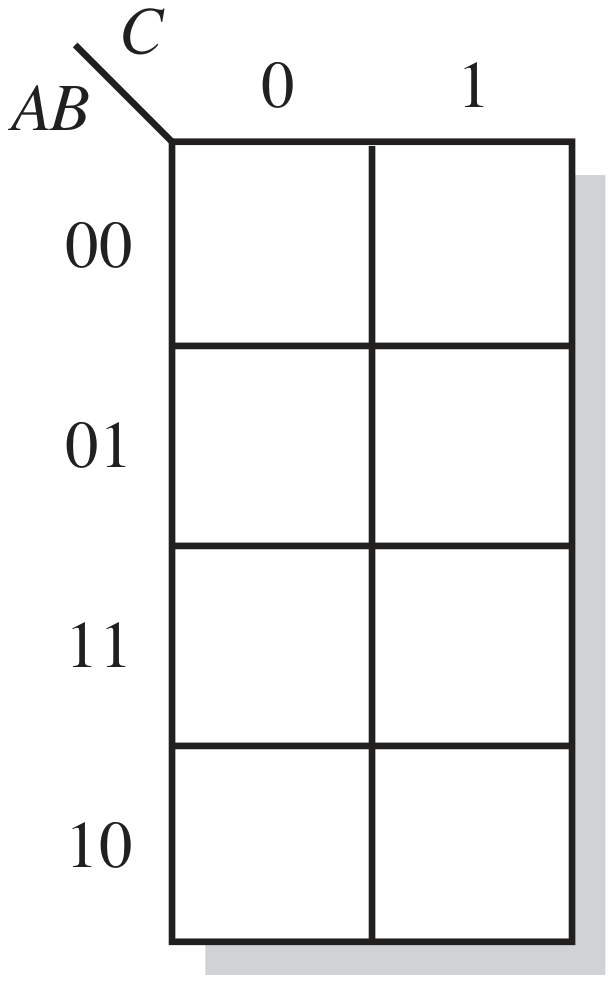
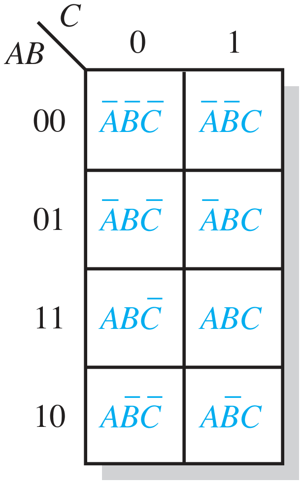
นักศึกษาคิดว่า ถ้าค่าไบนารีของพจน์หนึ่ง ๆ เท่ากับ 010 พจน์นั้นจะเป็นพจน์ที่อยู่ cell ใด ลองใช้ความคิดโดยประยุกต์ใช้ความรู้ที่ได้เรียนมาและใช้รูปที่ 5.4 (ข) ในการอ้างอิง
5.4.2 แผนผังคาร์โนห์แบบ 4 ตัวแปร
ประกอบด้วย 16 cell ที่วางตัวกันดังเห็นในรูปที่ 5.5 (ก) ในที่นี้จะใช้ตัวแปร A, B, C และ D ซึ่งเราสามารถใช้อักษรตัวอื่นก็ได้ จากรูปจะเห็นว่ามีการจับคู่ตัวแปร A กับ B และ C กับ D คู่กัน โดย AB จะอยู่ทางด้านซ้ายมือ (แถว) และ CD จะอยู่ด้านบน (คอลัมน์)
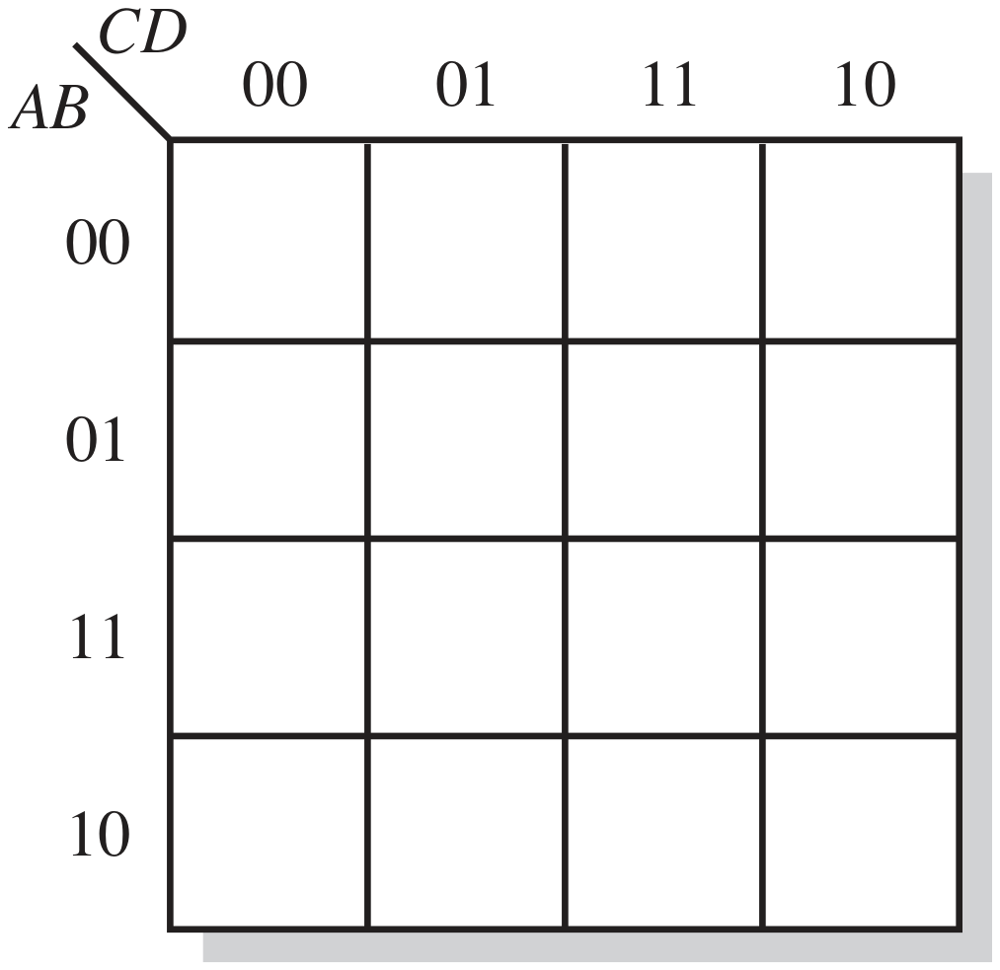

5.4.3 Cell Adjacency
Cell ใด ๆ ที่อยู่ในแผนผังคาร์โนห์นั้น จะสังเกตได้ว่า cell ที่อยู่ติดกัน (adjacent cell) จะมีการเปลี่ยนแปลงของตัวแปรเพียงตัวเดียวเท่านั้น (ซึ่งถ้าจำได้ รหัสเกรย์ (Gray code) มีคุณลักษณะเป็นเช่นนั้น นักศึกษาลองดูตัวเลขที่กำกับแผนผังในรูปที่ 5.4 และ 5.5 เพื่อประกอบการพิจารณาทำความเข้าใจ) เช่น ในแผนผังคาร์โนห์แบบ 3 ตัวแปร cell ที่มีค่าไบนารี 010 จะอยู่ติดกับ cell ที่มีค่าไบนารี 000, 011 และ 110 และจะไม่อยู่ติดกับ cell ที่มีค่าไบนารี 001, 111, 100 และ 101
ถ้าเราพิจารณาดูแต่ละ cell ที่อยู่ติดกัน จะเป็น cell ที่อยู่ 4 ด้านรอบตัวทางแนวตั้งและแนวนอนห่างไป 1 cell เท่านั้น ส่วนที่ติดกันแบบแนวทแยงจะไม่นับว่าเป็น cell ที่ติดกันในที่นี้ (ใช้หลักเกณฑ์ของเลขไบนารีที่เปลี่ยนแปลงเพียง 1 บิตที่ได้กล่าวไว้ข้างต้น) ทั้งนี้ขอให้พิจารณา cell ที่อยู่ชายขอบให้ดี เช่น cell ที่อยู่ชายขอบซ้ายของแผนผังคาร์โนห์แบบ 4 ตัวแปรอย่าง 1100 กับ cell ที่อยู่ชายขอบขวาแถวเดียวกัน ได้แก่ 1110 นั้นถือว่าเป็น cell ที่อยู่ติดกันด้วย โดยลองจินตนาการว่าถ้าเราเอาแผนผังนี้มาม้วนเข้าหากันโดยให้แนวตั้งเป็นแกนม้วน จะเห็นว่าทั้งสอง cell นี้มาชนกันพอดี และถ้าเราม้วนอีกแนวแกนหนึ่ง เราก็จะเห็นว่าชายขอบบนกับชายขอบล่างก็จะมี cell ที่นับว่าอยู่ติดกันได้อีกด้วย ลองดูรูปที่ 5.6 ที่มีการแสดงการม้วนเข้าหากัน และลองอภิปรายสำหรับ cell ที่อยู่มุมทั้งสี่ของแผนผังด้วยว่ามีความสัมพันธ์กันอย่างไร (ถ้าการม้วนทำให้สับสน ให้พิจารณาจากการเปลี่ยนแปลงของค่าไบนารีประจำ cell นั้น ๆ เพื่อประกอบการวิเคราะห์)
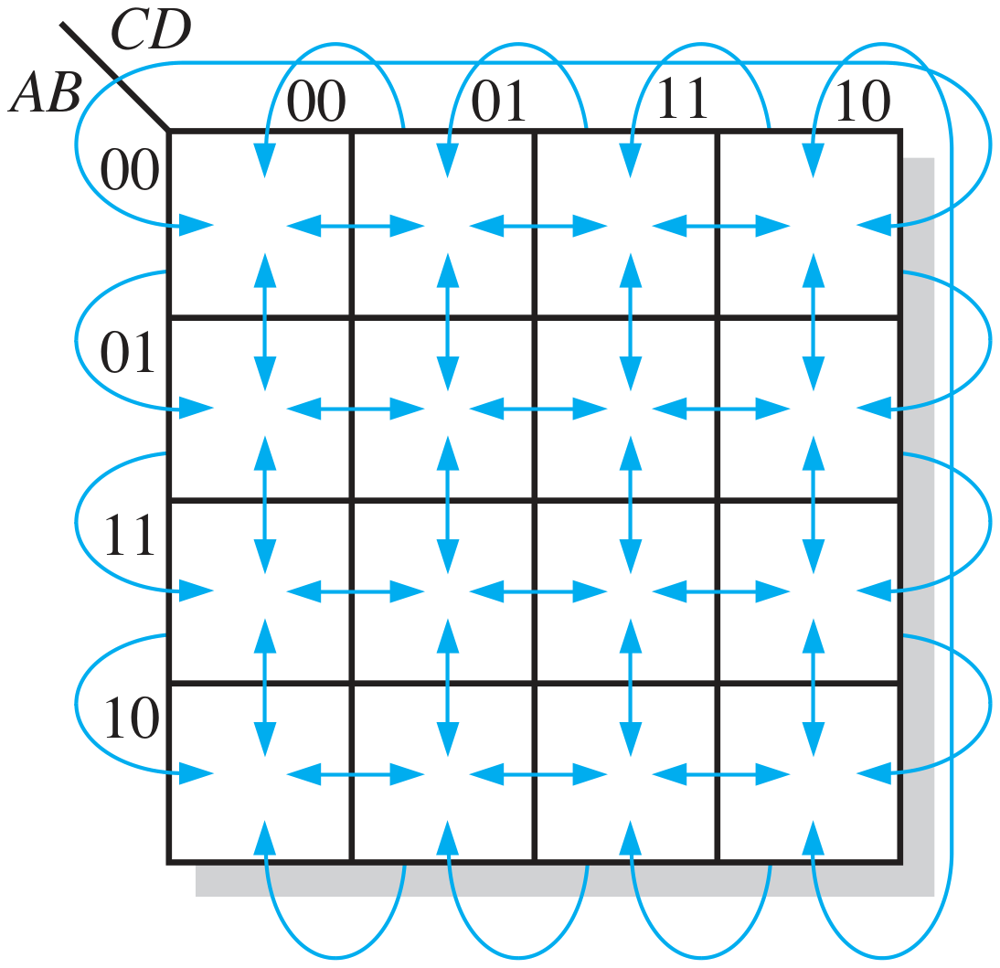
5.5 การใช้แผนผังคาร์โนห์สำหรับการลดรูปนิพจน์ SOP
ประโยชน์ของแผนผังคาร์โนห์นั้นมีไว้เพื่อการลดรูปนิพจน์บูลีนให้อยู่ในรูปที่ง่ายที่สุด หรือในอีกนัยหนึ่งคือเพื่อลดขนาดของวงจรนั่นเอง สำหรับหัวข้อนี้เราจะนำแผนผังคาร์โนห์มาลดรูปนิพจน์แบบ SOP ก่อน
5.5.1 การจัดนิพจน์ SOP มาตรฐานเข้าสู่แผนผัง
เมื่อเรามีนิพจน์ SOP มาตรฐานแล้ว เราจะสามารถจัดพจน์การคูณแต่ละพจน์ที่ปรากฏอยู่ในนิพจน์นั้น โดยใส่ค่า 1 ลงไปยังช่องต่าง ๆ ที่มีค่าไบนารีสอดคล้องกับพจน์นั้น ๆ เช่น พจน์ ABC จะใส่ลงไปใน cell ที่มีค่าไบนารีเป็น 101 ในแผนผังคาร์โนห์แบบ 3 ตัวแปร เป็นต้น
เมื่อทุกพจน์ได้ถูกจัดลงในแผนผังโดยสมบูรณ์แล้ว เราจะได้จำนวนตัวเลข 1 ปรากฏเท่ากับจำนวนของพจน์ที่ปรากฏในนิพจน์ SOP มาตรฐานนั้น ๆ สำหรับ cell ที่ไม่มีตัวเลข 1 กำกับไว้ก็จะมีค่าเป็น 0 แต่เมื่อเราทำงานกับนิพจน์ SOP เราจะไม่ใส่ 0 เข้าไปให้รกตา สรุปขั้นตอนการจัดนิพจน์ SOP มาตรฐานเข้าสู่แผนผังได้ดังต่อไปนี้
- ขั้นที่ 1 หาค่าไบนารีของพจน์การคูณแต่ละพจน์ที่ปรากฏในนิพจน์ SOP มาตรฐาน (ในขั้นตอนฝึกหัดแรก ๆ อาจใช้เวลาพอสมควร แต่เมื่อคล่องแคล่วแล้วเราจะสามารถทำในใจได้อย่างรวดเร็ว)
- ขั้นที่ 2 เมื่อเราได้ค่าไบนารีแล้ว ให้จัดแต่ละพจน์ลงไปยังแต่ละ cell ที่สอดคล้องกันด้วยค่าไบนารี โดยเขียนตัวเลข 1 ลงไปยัง cell เหล่านั้น
ดูตัวอย่างจากรูปที่ 5.7
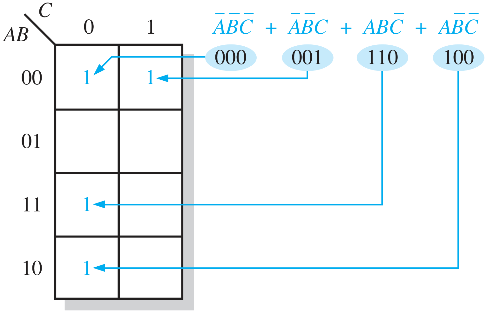
จงจัดนิพจน์ SOP มาตรฐานต่อไปนี้ลงในแผนผังคาร์โนห์ให้ถูกต้อง
แสดงวิธีทำ
จากนิพจน์ SOP มาตรฐานนี้ทำให้เราทราบว่าโดเมนนี้มีตัวแปรทั้งหมด 3 ตัวแปร และเราสามารถประเมินค่าไบนารีของแต่ละพจน์ได้ดังนี้
| ABC | + | ABC | + | ABC | + | ABC |
| 001 | 010 | 110 | 111 |
ซึ่งทำให้เราสามารถจัดแต่ละพจน์ให้ไปลงยัง cell ต่าง ๆ ได้ดังต่อไปนี้
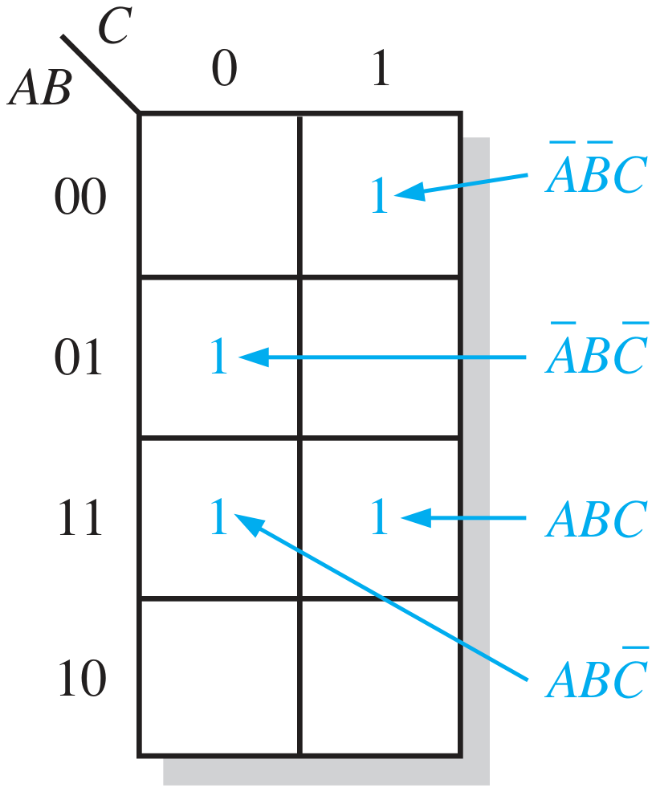
จงจัดนิพจน์ SOP มาตรฐานต่อไปนี้ลงในแผนผังคาร์โนห์ให้ถูกต้อง
แสดงวิธีทำ
จากนิพจน์ SOP มาตรฐานนี้ทำให้เราทราบว่าโดเมนนี้มีตัวแปรทั้งหมด 4 ตัวแปร และเราสามารถประเมินค่าไบนารีของแต่ละพจน์ได้ดังนี้
| ABCD | ABCD | ABCD | ABCD | ABCD | ABCD | ABCD |
| 0011 | 0100 | 1101 | 1111 | 1100 | 0001 | 1010 |
ซึ่งทำให้เราสามารถจัดแต่ละพจน์ให้ไปลงยัง cell ต่าง ๆ ได้ดังต่อไปนี้
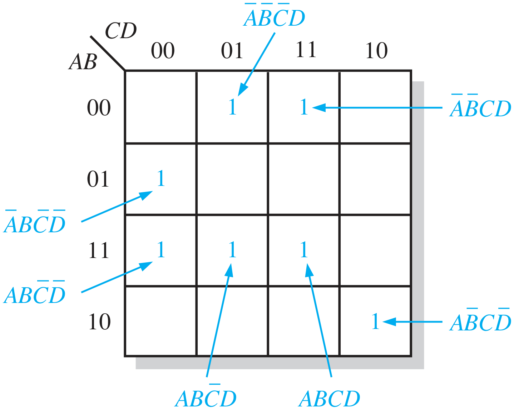
จงจัดนิพจน์ SOP มาตรฐานต่อไปนี้ลงในแผนผังคาร์โนห์ให้ถูกต้อง
- ABC + ABC + ABC
- ABC + ABC + ABC
- ABCD + ABCD + ABCD + ABCD
- ABCD + ABCD + ABCD + ABCD
5.5.2 การจัดนิพจน์ SOP ที่ไม่เป็นมาตรฐานลงในแผนผังคาร์โนห์
จากหัวข้อก่อนหน้านี้จะเห็นว่าการจัดพจน์ต่าง ๆ ลงในแผนผังคาร์โนห์นั้นจะทำได้ก็ต่อเมื่อนิพจน์ที่ถูกกำหนดเอาไว้อยู่ในแบบ SOP มาตรฐานเท่านั้น แต่ถ้านิพจน์นั้น ๆ ไม่ได้อยู่ในรูปมาตรฐาน เราก็ต้องทำการแปลงเสียก่อน โดยอาจใช้วิธีที่ได้กล่าวไว้ในหัวข้อ 5.2.1.4 ที่ผ่านมา หรืออาจจะใช้วิธี numerical expansion (การขยายพจน์ด้วยวิธีเชิงตัวเลข) ซึ่งเป็นวิธีที่มีประสิทธิภาพ
การใช้ numerical expansion กับพจน์การคูณที่ไม่เป็นมาตรฐาน พจน์ลักษณะนี้จะขาดตัวแปรบางตัวที่อยู่ในโดเมนของนิพจน์นั้น ๆ สมมติว่าพจน์หนึ่งในนิพจน์ที่มีตัวแปร 3 ตัว A, B และ C อยู่ในโดเมนปรากฏเป็น AB เราสามารถขยายพจน์นี้ออกได้เป็น 2 พจน์ โดยเริ่มจากการเขียนค่าไบนารีของ 2 ตัวแปรที่เห็น แล้วเขียน 0 ต่อท้ายสำหรับ C ที่หายไป ได้เป็น 100 ขั้นต่อไปให้เขียนค่าไบนารีของ 2 ตัวแปรที่เห็น แล้วเขียน 1 ต่อท้ายสำหรับ C ที่หายไป เป็น 101 ซึ่งเราจะแปลงกลับให้เป็นพจน์การคูณได้เป็น ABC และ ABC ตามลำดับ
สำหรับตัวอย่างถัดไป ในกรณีที่เป็นนิพจน์ขนาด 3 ตัวแปร แต่พจน์ที่มีอยู่ตัวหนึ่งนั้นเป็น B ซึ่งขาด A และ C ไป เราสามารถทำ numerical expansion ได้ดังต่อไปนี้
| B |
|---|
| 010 |
| 011 |
| 110 |
| 111 |
ซึ่งเราจะได้ค่าไบนารี 4 ค่าที่ขยายออกมา ซึ่งแปลงกลับให้เป็นพจน์การคูณมาตรฐานได้เป็น ABC, ABC, ABC และ ABC ตามลำดับ
จงจัดนิพจน์ SOP ต่อไปนี้ลงในแผนผังคาร์โนห์ให้ถูกต้อง A + AB + ABC
แสดงวิธีทำ
นิพจน์นี้ไม่ได้เป็น SOP มาตรฐาน เพราะพจน์แรกขาดไป 2 ตัวแปร พจน์ที่สองขาดไป 1 ตัวแปร สำหรับพจน์สุดท้ายมีตัวแปรครบ ดังนั้นเราจะใช้ numerical expansion กับแต่ละพจน์ได้ดังต่อไปนี้
| A | + | AB | + | ABC |
|---|---|---|---|---|
| 000 | 100 | 110 | ||
| 001 | 101 | |||
| 010 | ||||
| 011 |
จากผลลัพธ์ที่ได้นี้ เราจะนำค่าไบนารีที่ได้แต่ละค่าไปจัดลงในแผนผังคาร์โนห์ได้ดังต่อไปนี้
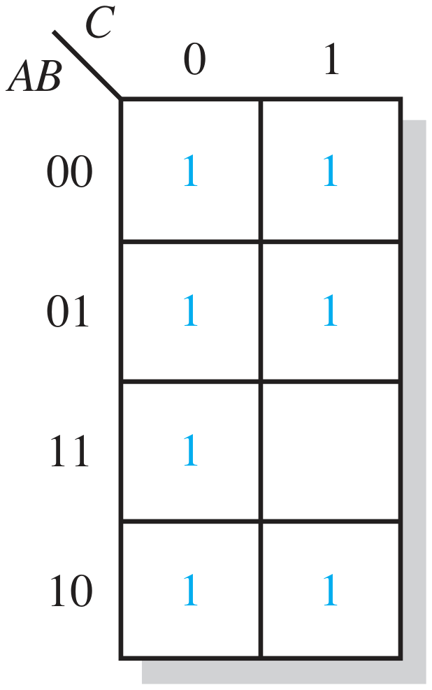
จงจัดนิพจน์ SOP ต่อไปนี้ลงในแผนผังคาร์โนห์ให้ถูกต้อง
แสดงวิธีทำ
นิพจน์นี้ไม่ได้เป็น SOP มาตรฐาน เพราะพจน์แรกขาดไป 2 ตัวแปร พจน์ที่สองขาดไป 2 ตัวแปร พจน์ที่สามขาดไป 1 ตัวแปร สำหรับพจน์ที่เหลือเป็นพจน์ที่มีตัวแปรครบ 4 ตัวแปร ดังนั้นเมื่อเราใช้ numerical expansion เราจะได้ดังต่อไปนี้
| BC | AB | ABC | ABCD | ABCD | ABCD |
|---|---|---|---|---|---|
| 0000 | 1000 | 1100 | 1010 | 0001 | 1011 |
| 0001 | 1001 | 1101 | |||
| 1000 | 1010 | ||||
| 1001 | 1011 |
จากผลลัพธ์ที่ได้นี้ เราจะนำค่าไบนารีที่ได้แต่ละค่าไปจัดลงในแผนผังคาร์โนห์ขนาด 4 ตัวแปรได้ดังต่อไปนี้ ทั้งนี้สังเกตว่าค่าไบนารีบางค่า (ในวงกลม) มีความซ้ำซ้อนกับค่าอื่นอยู่ ซึ่งเพียงไม่ต้องสนใจตัวใดตัวหนึ่งที่ซ้ำกันเท่านั้น (นำค่าที่ซ้ำกันไปใส่ในแผนผังเพียงครั้งเดียว)
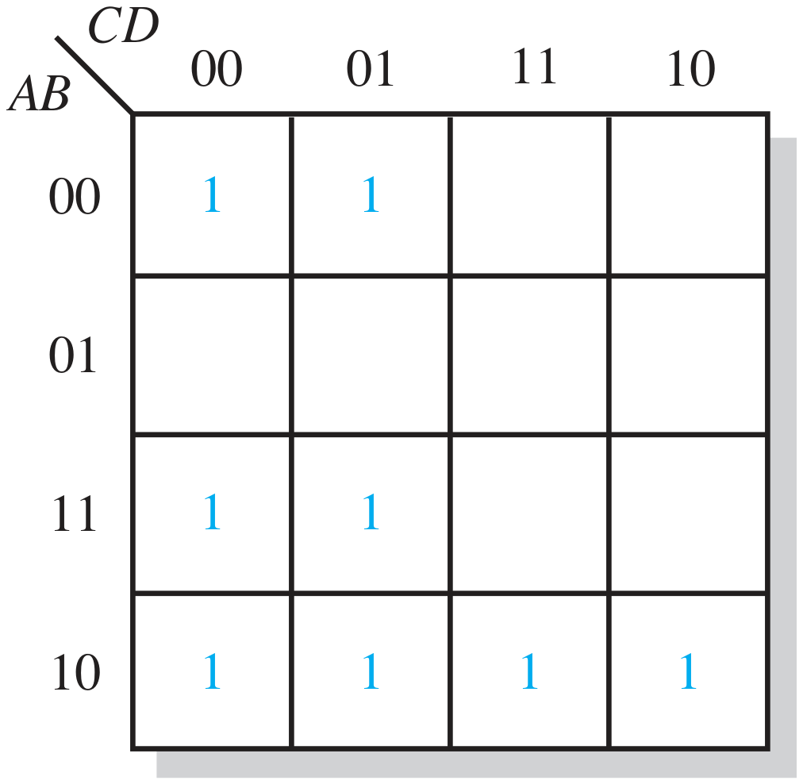
5.5.3 การใช้แผนผังคาร์โนห์เพื่อการลดรูปนิพจน์ SOP
กระบวนการที่ทำให้เกิดนิพจน์ซึ่งมีจำนวนพจน์น้อยที่สุด โดยที่แต่ละพจน์มีตัวแปรจำนวนน้อยที่สุด เรียกว่า การลดขนาดนิพจน์ให้เล็กที่สุด (minimization) ซึ่งจะทำได้ด้วยการจัดกลุ่มของตัวเลข 1 ที่ปรากฏบนแผนผัง อันจะเป็นขั้นตอนที่นำไปสู่การลดรูปนิพจน์ SOP ให้เล็กที่สุดเท่าที่จะเล็กได้ต่อไป
การจัดกลุ่มของตัวเลข 1 การจัดกลุ่มตัวเลข 1 ที่อยู่บน cell ที่ติดกัน (adjacent cell) บนแผนผังคาร์โนห์นั้น จะต้องพยายามรวบรวมให้เกิดกลุ่มที่มีสมาชิกของกลุ่มให้มากที่สุด และมีจำนวนกลุ่มให้น้อยที่สุด โดยมีกฎในการจัดกลุ่มดังต่อไปนี้
- กลุ่มใดกลุ่มหนึ่งจะต้องประกอบด้วยจำนวน cell ของตัวเลข 1 เป็นจำนวน 1, 2, 4, 8 หรือ 16 (เป็นเลขยกกำลังของ 2) สำหรับกรณีตัวแปร 3 ตัวนั้น เราสามารถจัดกลุ่มได้ใหญ่ที่สุดคือ 23 = 8 cell
- แต่ละ cell ที่อยู่ในกลุ่มเดียวกันจะต้องเป็น cell ที่อยู่ติดกันกับ cell ใกล้เคียงซึ่งกันและกัน แต่ไม่จำเป็นต้องเป็น cell ที่ติดกับทุก cell ภายในกลุ่มเดียวกัน
- ต้องทำให้เกิดเป็นกลุ่มที่ใหญ่ที่สุดเท่าที่จะเป็นไปได้ โดยแต่ละกลุ่มจะต้องมีจำนวน cell เป็นไปตามที่ได้กำหนดไว้ในกฎการจัดกลุ่มข้อที่ 1
- ตัวเลข 1 แต่ละตัวที่ปรากฏบนแผนผังจะต้องอยู่ในกลุ่มใดกลุ่มหนึ่งเสมอ สำหรับตัวเลข 1 ที่อยู่ในกลุ่มใดกลุ่มหนึ่งอยู่แล้ว อาจนำไปจัดเข้ากับอีกกลุ่มหนึ่งก็ได้ โดยที่ทั้งสองกลุ่มนี้จะต้องไม่มีตัวเลข 1 ร่วมกันทั้งหมด (แต่ละกลุ่มต้องมีตัวเลข 1 อย่างน้อยหนึ่งตัวที่ไม่ได้อยู่ในอีกกลุ่มหนึ่ง)
พิจารณาจากตัวอย่างต่อไปนี้
จงจัดกลุ่มของตัวเลข 1 สำหรับแผนผังคาร์โนห์ที่ปรากฏในรูปต่อไปนี้
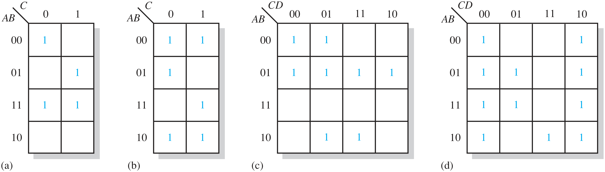
แสดงวิธีทำ
การจัดกลุ่มในแต่ละแผนผังสามารถทำได้ดังรูปข้างล่าง (อาจมีวิธีอื่นอีกที่จะจัดกลุ่มให้ใหญ่ที่สุดได้)
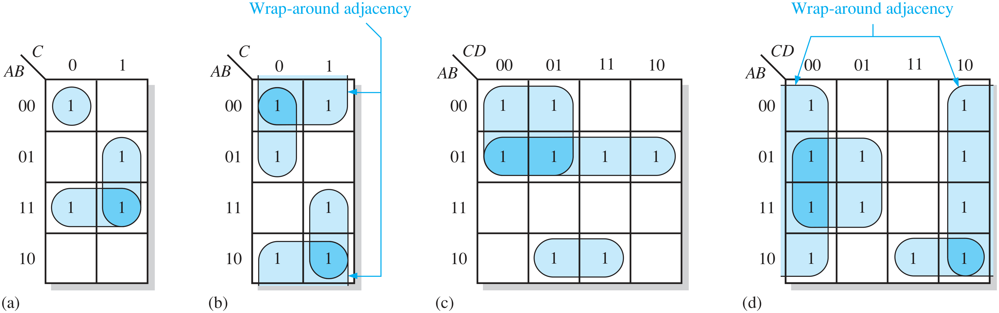
การหานิพจน์ SOP ที่เล็กที่สุดจากแผนผังฯ เมื่อการจัดกลุ่มของตัวเลข 1 จากขั้นตอนก่อนหน้าได้เสร็จสิ้นแล้ว กระบวนการต่อไปคือการหานิพจน์ SOP ที่เล็กที่สุด ซึ่งจะต้องกระทำตามกฎดังต่อไปนี้
- กลุ่มที่เราจัดได้กลุ่มหนึ่ง ๆ นั้นจะได้ผลลัพธ์เป็นพจน์การคูณออกมา 1 พจน์ ซึ่งเราจะต้องหาสิ่งที่เรียกว่า ตัวแปรขัดแย้ง (contradictory variables) ที่เราจะทำการกำจัดออกไปได้ โดยตัวแปรขัดแย้งนั้นจะเป็นตัวแปรที่ปรากฏทั้งในรูปของตัวแปรตัวนั้นเองและในรูป complement ของตัวแปรตัวนั้นในกลุ่มที่ถูกจัดไว้
- การหาพจน์ที่เล็กที่สุดที่เป็นไปได้จากแต่ละกลุ่มจะเป็นไปตามนี้
ก. แผนผังขนาด 3 ตัวแปร 1 cell เกิดพจน์ขนาด 3 ตัวแปร 2 cell เกิดพจน์ขนาด 2 ตัวแปร 4 cell เกิดพจน์ขนาด 1 ตัวแปร 8 cell ได้นิพจน์ผลลัพธ์เท่ากับ 1 ข. แผนผังขนาด 4 ตัวแปร 1 cell เกิดพจน์ขนาด 4 ตัวแปร 2 cell เกิดพจน์ขนาด 3 ตัวแปร 4 cell เกิดพจน์ขนาด 2 ตัวแปร 8 cell เกิดพจน์ขนาด 1 ตัวแปร 16 cell ได้นิพจน์ผลลัพธ์เท่ากับ 1 - เมื่อได้พจน์ผลลัพธ์จากแต่ละกลุ่มมาแล้ว ให้นำแต่ละพจน์มาบวก (sum) เข้าด้วยกัน เพื่อทำให้เกิดเป็นนิพจน์ SOP ซึ่งจะมีขนาดที่เล็กที่สุดที่เป็นไปได้
จงหาพจน์การคูณสำหรับแผนผังคาร์โนห์ต่อไปนี้ พร้อมทั้งเขียนผลลัพธ์ที่อยู่ในรูปของนิพจน์ SOP ที่มีขนาดเล็กที่สุด
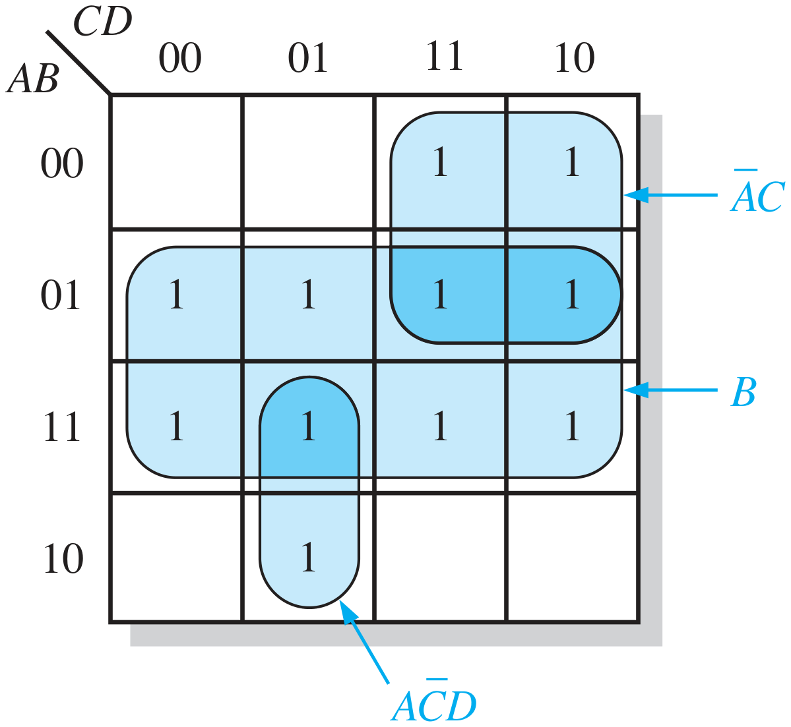
แสดงวิธีทำ
ทำการหาตัวแปรขัดแย้งในแต่ละกลุ่มที่จัดได้ เริ่มต้นจากกลุ่มขนาด 8 cell ซึ่งจะเห็นว่าในกลุ่มนี้มี A กับ A, C กับ C และ D กับ D ซึ่งอยู่ในลักษณะตัวแปรขัดแย้ง และสามารถกำจัดออกไปได้ ทำให้กลุ่มนี้เกิดพจน์ขนาด 1 ตัวแปร ซึ่งคือ B หลงเหลืออยู่ตัวเดียว สำหรับกลุ่มต่อไปคือกลุ่มขนาด 4 cell ซึ่งมี B กับ B และ D กับ D ซึ่งอยู่ในลักษณะตัวแปรขัดแย้งที่กำจัดออกไปได้ ทำให้พจน์นี้คงเหลือเป็น AC และสำหรับกลุ่มสุดท้ายคือกลุ่มขนาด 2 cell ซึ่งมีเพียง B กับ B เท่านั้นที่อยู่ในลักษณะตัวแปรขัดแย้ง จึงทำให้พจน์นี้มีผลลัพธ์เป็น ACD คงเหลืออยู่ ลองพิจารณาดูว่าการซ้อนทับของกลุ่มที่พยายามจัดให้ใหญ่ที่สุดเท่าที่จะเป็นไปได้นั้น ส่งผลให้เกิดพจน์ที่มีขนาดเล็กที่สุดที่เป็นไปได้นั่นเอง และนิพจน์ SOP ผลลัพธ์ก็คือ
จงหาพจน์การคูณสำหรับแผนผังคาร์โนห์ต่อไปนี้ พร้อมทั้งเขียนผลลัพธ์ที่อยู่ในรูปของนิพจน์ SOP ที่มีขนาดเล็กที่สุด
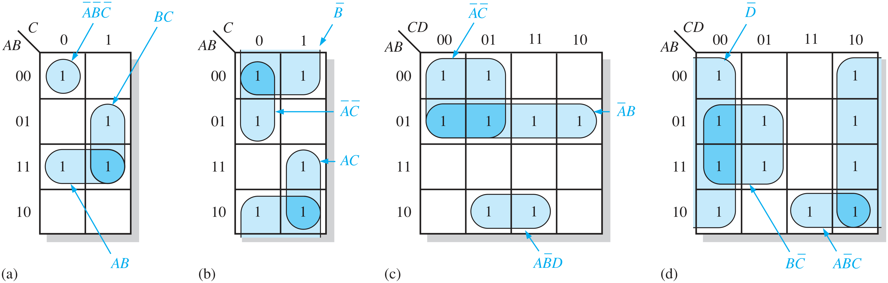
แสดงวิธีทำ
แต่ละรูปด้านบน เมื่อทำการจัดกลุ่มและหาพจน์ที่เล็กที่สุดด้วยการกำจัดตัวแปรขัดแย้งออกไปได้ จะทำให้เกิดผลลัพธ์เป็นนิพจน์ SOP ที่เล็กที่สุดดังต่อไปนี้
จงใช้แผนผังคาร์โนห์เพื่อลดรูปนิพจน์ SOP มาตรฐานต่อไปนี้
แสดงวิธีทำ
เริ่มจากการหาค่าไบนารีของนิพจน์นี้ จะได้เป็น
เมื่อนำมาจัดลงแผนผังฯ จัดกลุ่มตัวเลข 1 และกำจัดตัวแปรขัดแย้งในแต่ละกลุ่มแล้ว จะได้ผลลัพธ์ดังต่อไปนี้
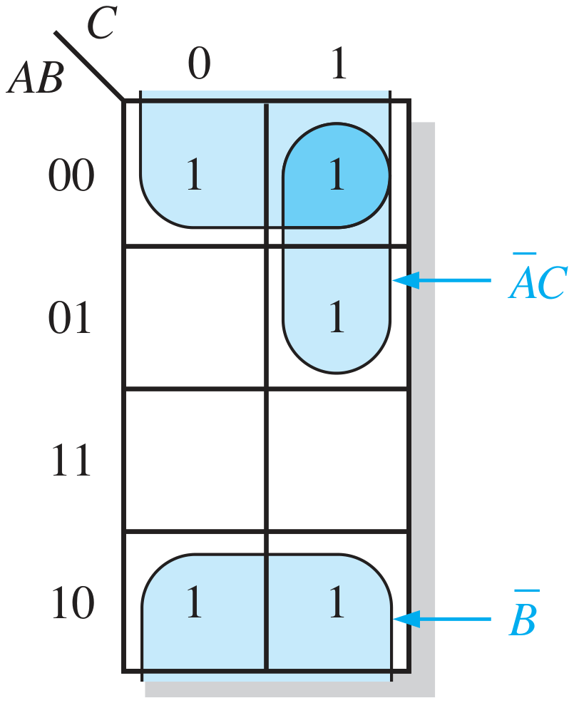
ดังนั้นเราจะได้นิพจน์ SOP ที่ถูกลดรูปเป็น
ทั้งนี้อยากให้ลองพิจารณาการม้วนบรรจบของกลุ่ม 4 cell ที่เห็นในรูป ซึ่งเป็นจุดสำคัญที่ทำให้เกิดกลุ่มขนาดใหญ่ อันนำไปสู่การลดพจน์แรกให้เหลือเพียง (complement ของ) ตัวแปรเดียวเท่านั้น
จงใช้แผนผังคาร์โนห์เพื่อลดรูปนิพจน์ SOP ต่อไปนี้
แสดงวิธีทำ
มีเฉพาะพจน์แรกเท่านั้นที่ไม่เป็นพจน์การคูณมาตรฐานสำหรับโดเมนในนิพจน์นี้ ซึ่งสามารถขยายออกได้เป็น 2 พจน์ ได้แก่ ABCD และ ABCD ซึ่งเมื่อนำมาจัดลงในแผนผังฯ และทำการจัดกลุ่ม เราจะได้เป็น
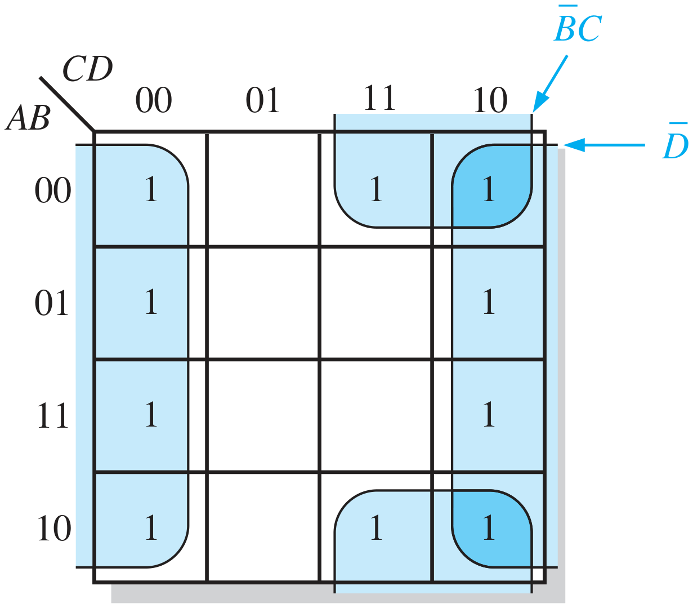
สำหรับกรณีนี้จะเห็นว่าการม้วนบรรจบทั้งสองแนวสามารถทำให้เกิดกลุ่มที่มีขนาด 4 cell (ม้วนตามแกนนอน) และกลุ่มขนาด 8 cell (ม้วนตามแกนตั้ง) ซึ่งทำให้เกิดการกำจัดตัวแปรขัดแย้งออกได้เป็นจำนวนมาก ยังผลให้ได้ผลลัพธ์เป็นนิพจน์ SOP ที่ลดรูปแล้วดังต่อไปนี้
จงใช้แผนผังคาร์โนห์เพื่อลดรูปนิพจน์ SOP ต่อไปนี้
- XYZ + XYZ + XYZ + XYZ + XYZ + XYZ
- WXYZ + WXYZ + WXYZ + WYZ + WXYZ
5.5.4 การจัดแผนผังคาร์โนห์จากตารางค่าความจริง
สิ่งที่เราทำมาทั้งหมดในการจัดแผนผังฯ เราเริ่มจากนิพจน์ SOP ใด ๆ ในหัวข้อนี้จะเป็นการจัดแผนผังคาร์โนห์จากตารางค่าความจริงโดยตรง ซึ่งเป็นเรื่องที่ง่ายมาก ขอให้ศึกษาจากรูปที่ 5.8
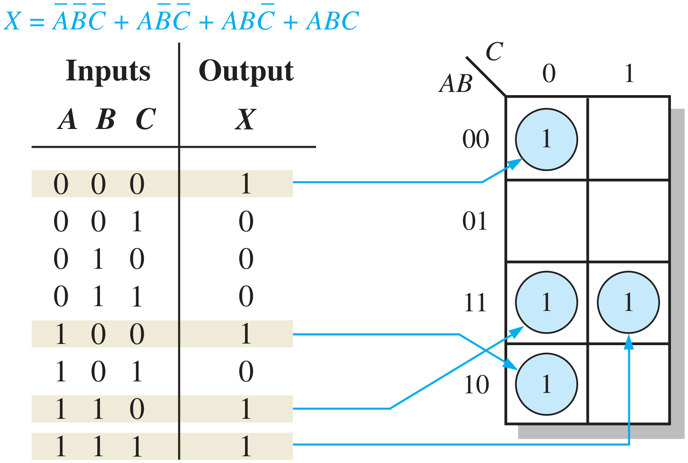
5.5.5 เงื่อนไข “Don’t Care”
ในบางสถานการณ์จะพบว่า combination ของตัวแปรอินพุตบางชุดจะไม่เกิดขึ้น ถ้าจำได้ในส่วนของรหัส 8421 หรือที่เรียกว่า BCD ซึ่งใช้ 4 บิต จะมีอยู่ 6 combination ที่เป็น invalid code ได้แก่ 1010, 1011, 1100, 1101, 1110 และ 1111 และในการใช้งานระบบที่เกี่ยวข้องกับ BCD นั้น combination ทั้งหกที่กล่าวมานี้จะไม่เกิดขึ้น ซึ่งเราจะกำหนดให้กรณีนี้เป็นพจน์ที่เป็น “don’t care” ซึ่งหมายความว่า ไม่ว่าเอาต์พุตของ combination ดังกล่าวจะเป็น 1 หรือ 0 ก็จะไม่มีผลใด ๆ เนื่องจากจะไม่มีวันเกิดขึ้น
พจน์ “don’t care” นี้จะทำให้เกิดข้อได้เปรียบสำหรับการใช้แผนผังคาร์โนห์ในการลดรูปนิพจน์ ลองพิจารณาจากรูปที่ 5.9 (ข) ที่ได้มาจากการจัดลงจากตารางค่าความจริงของส่วน (ก) ซึ่งจะมีการเขียน cell ที่เป็นตัวแทนของพจน์ “don’t care” ด้วยเครื่องหมาย “X” ซึ่งหมายความว่าจะเป็น 0 หรือ 1 ก็ได้ ดังนั้นในกรณีของการใช้แผนผังฯ กับนิพจน์ SOP เราจะสามารถสมมติให้ “X” เป็น 1 ได้ ซึ่งเราสามารถนำไปร่วมจัดกลุ่มกับตัวเลข 1 ที่ปรากฏอยู่ในแผนผังคาร์โนห์นั้น ๆ อันจะเป็นการขยายความสามารถในการทำให้กลุ่มนั้นมีจำนวน cell ที่เป็นสมาชิกได้มากขึ้นด้วย
ในรูปนี้จะเห็นว่า ถ้าเรารวมพจน์ “don’t care” เข้าไปในการจัดกลุ่มด้วย เราจะได้ผลลัพธ์เป็น A + BCD แทนที่จะเป็นนิพจน์ ABC + ABCD ที่เกิดจากการไม่ได้นำพจน์ “don’t care” ไปร่วมกลุ่มด้วย
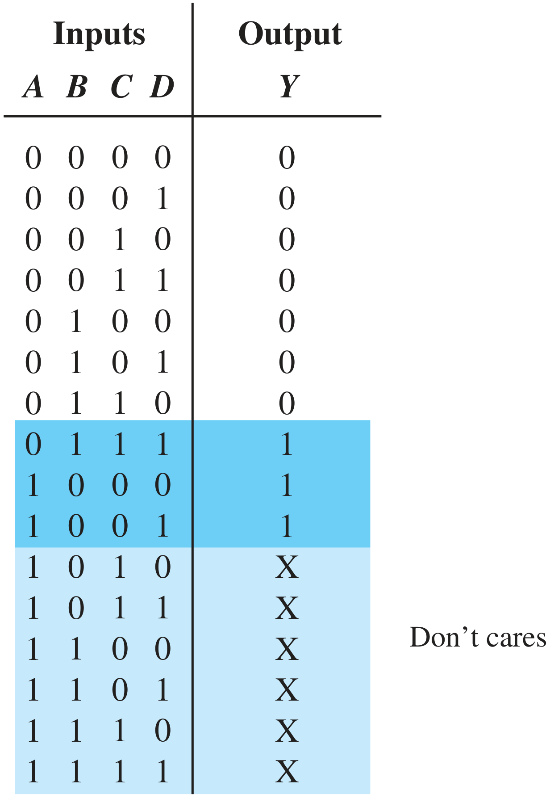

ส่วนกรณีที่ใช้ “don’t care” เราจะได้ A + BCD
5.6 การใช้แผนผังคาร์โนห์สำหรับการลดรูปนิพจน์ POS
หัวข้อที่ 5.5 เราได้เรียนรู้การใช้แผนผังคาร์โนห์สำหรับการลดรูปนิพจน์ SOP ไปแล้ว ในหัวข้อนี้จะเป็นการเรียนรู้สำหรับนิพจน์แบบ POS กันบ้าง ซึ่งกระบวนการมีรายละเอียดที่คล้ายคลึงกัน เพียงแต่เราจะใช้ตัวเลข 0 ใน POS แทนที่จะใช้ตัวเลข 1
5.6.1 การจัดนิพจน์ POS มาตรฐานเข้าสู่แผนผังฯ
สำหรับนิพจน์ POS มาตรฐานใด ๆ เราสามารถบรรจุตัวเลข 0 เพื่อเป็นตัวแทนของแต่ละพจน์การบวกที่ปรากฏอยู่ ยกตัวอย่างเช่น พจน์การบวก A + B + C เราก็จะบรรจุตัวเลข 0 ลงไปยัง cell ที่มีค่าไบนารี 010 สำหรับแผนผังฯ ขนาด 3 ตัวแปร
เมื่อการจัดแผนผังเสร็จสิ้นแล้ว สิ่งที่เราจะได้คือจำนวนตัวเลข 0 ที่มีเท่ากับจำนวนพจน์การบวกมาตรฐาน (ที่ไม่ซ้ำซ้อนกัน) ยกตัวอย่างในรูปที่ 5.10 ที่แสดงการจัดนิพจน์ POS มาตรฐานเข้าสู่แผนผังฯ ซึ่งมีกระบวนการดังต่อไปนี้
- ขั้นที่ 1 ทำการหาค่าไบนารีของแต่ละพจน์การบวกที่ปรากฏอยู่ในนิพจน์ POS มาตรฐานนั้น ๆ โดยที่ค่าไบนารีนั้นจะต้องทำให้พจน์นั้นมีค่าเท่ากับ 0
- ขั้นที่ 2 บรรจุตัวเลข 0 ลงใน cell ที่มีค่าไบนารีสอดคล้องกับที่หาได้ในขั้นที่ 1
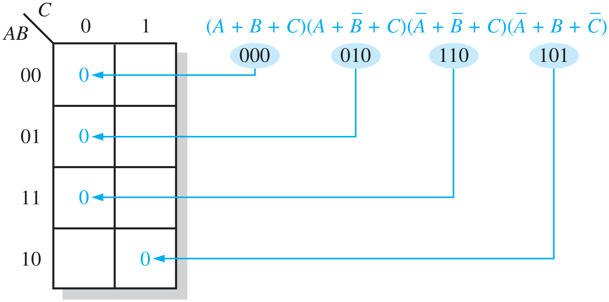
จงจัดนิพจน์ POS มาตรฐานต่อไปนี้เข้าสู่แผนผังคาร์โนห์
แสดงวิธีทำ
เริ่มจากการหาค่าไบนารีของแต่ละพจน์การบวก และทำการบรรจุตัวเลข 0 ลงไปใน cell ของแผนผังคาร์โนห์ขนาด 4 ตัวแปรที่มีค่าไบนารีซึ่งมีความสอดคล้องกับแต่ละพจน์
| (A + B + C + D) | → | 1100 |
| (A + B + C + D) | → | 1011 |
| (A + B + C + D) | → | 0010 |
| (A + B + C + D) | → | 1111 |
| (A + B + C + D) | → | 0011 |
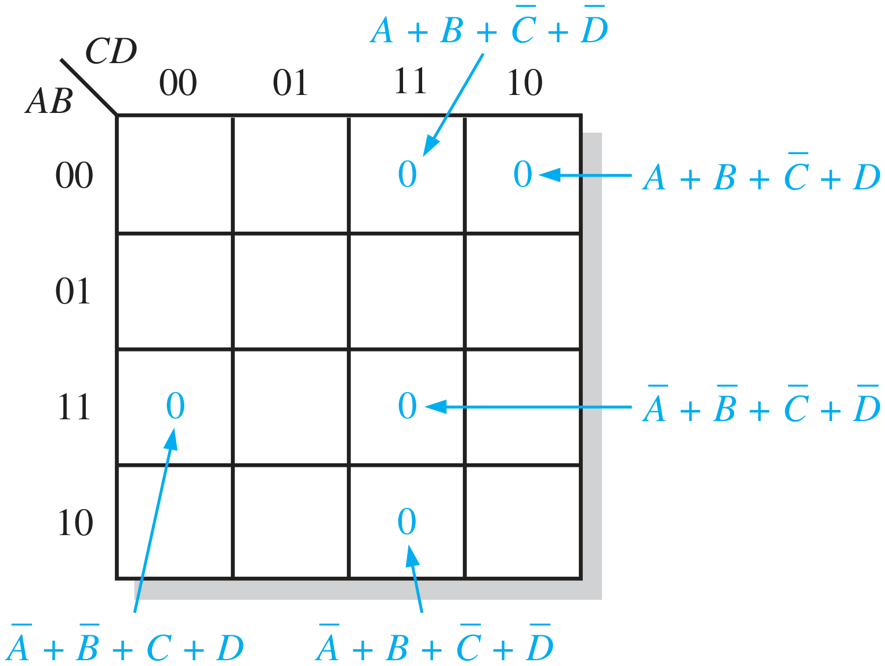
5.6.2 การใช้แผนผังคาร์โนห์เพื่อการลดรูปนิพจน์ POS
กระบวนการนี้จะมีความคล้ายคลึงกับการทำกับนิพจน์ SOP เพียงแต่จะเปลี่ยนเป็นการจัดกลุ่มของตัวเลข 0 เพื่อทำการหาพจน์การบวก แทนที่จะเป็นการจัดกลุ่มตัวเลข 1 กฎการจัดกลุ่มของตัวเลข 0 ก็จะใช้แบบเดียวกันกับที่เรียนไปในหัวข้อ 5.5.3 ที่ใช้ในการจัดกลุ่มตัวเลข 1
จงใช้แผนผังคาร์โนห์เพื่อทำการลดรูปนิพจน์ POS ต่อไปนี้ ทั้งนี้ให้หานิพจน์ SOP ที่เทียบเท่ากันมาพร้อมกันด้วย
แสดงวิธีทำ
สำหรับค่าไบนารีของแต่ละพจน์จะได้ดังต่อไปนี้
| (A + B + C) | (A + B + C) | (A + B + C) | (A + B + C) | (A + B + C) |
| 000 | 001 | 010 | 011 | 110 |
ซึ่งเราสามารถจัดตัวเลข 0 ลงใน cell ต่าง ๆ (แถวเรียงตามรหัสเกรย์ 00, 01, 11, 10) และทำการหาพจน์การบวกได้ดังต่อไปนี้
ดังนั้นนิพจน์ POS ที่ได้จะเป็น
สำหรับการหานิพจน์ SOP ที่เทียบเท่า ก็เพียงใส่ตัวเลข 1 ใน cell ที่เหลือทั้งหมด แล้วทำการจัดกลุ่ม จะได้ดังต่อไปนี้
ซึ่งเราจะได้นิพจน์ SOP ผลลัพธ์เป็น
ซึ่งนิพจน์ POS และ SOP ที่ได้ทั้งสองนี้มีค่าเท่ากัน ดังนั้น
จงใช้แผนผังคาร์โนห์ในการลดรูปนิพจน์ POS ต่อไปนี้
แสดงวิธีทำ
พจน์แรกเป็นพจน์เดียวที่ไม่ใช่พจน์การบวกมาตรฐาน ดังนั้นต้องนำมาขยายให้เป็นพจน์มาตรฐานได้ 2 พจน์ ได้แก่ A + B + C + D กับ A + B + C + D เมื่อนำไปจัดลงในแผนผังฯ และจัดกลุ่มจะได้ผลต่อไปนี้
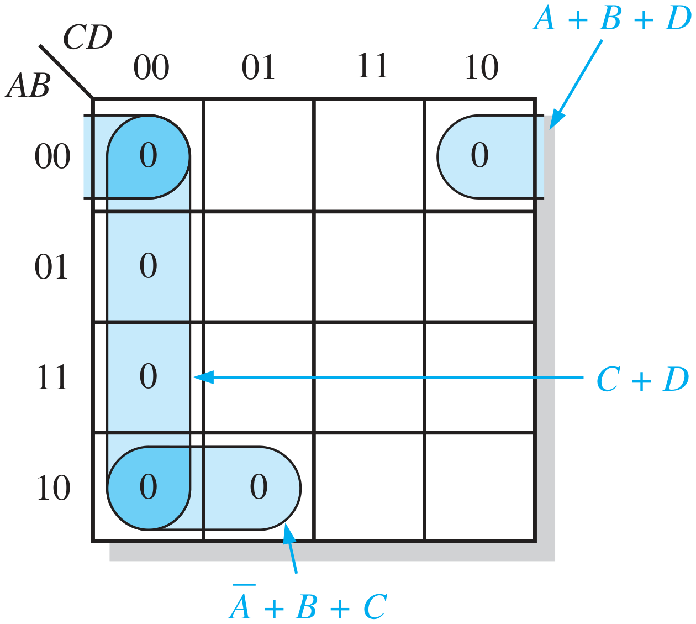
เมื่อทำการกำจัดตัวแปรขัดแย้งของแต่ละกลุ่มออกไป จะได้พจน์การบวกที่นำมาคูณกันเป็นนิพจน์ POS ดังต่อไปนี้
จงใช้แผนผังคาร์โนห์เพื่อลดรูปนิพจน์ POS ต่อไปนี้
- (X + Y + Z)(X + Y + Z)(X + Y + Z)(X + Y + Z)
- (W + X + Y + Z)(W + X + Y + Z)(W + X + Y + Z)(W + X + Z)
สรุปท้ายบท
- นิพจน์บูลีนลดรูปได้ด้วยกฎ หลักเกณฑ์ และทฤษฎีบทของ DeMorgan นิพจน์ที่ง่ายกว่าใช้เกทน้อยกว่าแต่ให้ผลลัพธ์เหมือนเดิมทุกประการ
- รูปแบบมาตรฐานมี 2 แบบ คือ SOP (ผลบวกของพจน์การคูณ) และ POS (ผลคูณของพจน์การบวก) และรูปแบบ “มาตรฐาน” คือทุกพจน์มีตัวแปรครบทุกตัวในโดเมน
- ขยายพจน์ให้เป็นมาตรฐานได้ด้วยการคูณ (X + X) สำหรับ SOP หรือบวก XX สำหรับ POS หรือใช้ numerical expansion
- พจน์การคูณมาตรฐานเป็น 1 ได้เพียง combination เดียว (1 → ตัวแปร, 0 → complement) ส่วนพจน์การบวกมาตรฐานเป็น 0 ได้เพียง combination เดียว (0 → ตัวแปร, 1 → complement)
- แผนผังคาร์โนห์เรียง cell ตามรหัสเกรย์ cell ที่ติดกัน (รวมถึงการม้วนบรรจบที่ขอบ) ต่างกันเพียง 1 บิต
- จัดกลุ่ม cell ที่ติดกันเป็นจำนวน 1, 2, 4, 8 หรือ 16 ให้ใหญ่ที่สุดและน้อยกลุ่มที่สุด แล้วกำจัดตัวแปรขัดแย้ง โดยกลุ่มของ 1 ใช้หา SOP และกลุ่มของ 0 ใช้หา POS
- พจน์ “don’t care” (X) นำไปร่วมจัดกลุ่มได้เพื่อให้ได้นิพจน์ที่เล็กลงกว่าเดิม
แบบทดสอบท้ายบท
เลือกคำตอบ ระบบจะเฉลยพร้อมคำอธิบายทันที (ไม่มีการบันทึกคะแนน ใช้สำหรับทบทวนด้วยตนเอง)
ปฏิบัติการสัปดาห์ที่ 6 · ลดรูปและต่อวงจรเปรียบเทียบ
ตามแผนการสอนใน มคอ.3 — ลดรูปนิพจน์ด้วยแผนผังคาร์โนห์ แล้วต่อวงจรก่อนและหลังลดรูปบนแผงทดลองเพื่อยืนยันว่าทำงานเหมือนกันทุกกรณี และเปรียบเทียบจำนวนเกท/ไอซีที่ใช้
📋 ใบงานปฏิบัติการที่ 4 (สัปดาห์ที่ 6)
- ลดรูปด้วยพีชคณิต: ต่อวงจรตั้งต้น AB + A(B + C) + B(B + C) (รูปที่ 5.1 ก) และวงจรหลังลดรูป B + AC (รูปที่ 5.1 ข) ป้อนอินพุตครบ 8 กรณี บันทึกเอาต์พุตของทั้งสองวงจร
- SOP → แผนผังคาร์โนห์: ลดรูปนิพจน์ในตัวอย่างที่ 5.21 ด้วยแผนผัง แล้วต่อวงจร AND-OR ของผลลัพธ์ (B + AC) เทียบกับวงจร SOP มาตรฐาน 5 พจน์ (ทำบางกรณีพอให้เห็นความเท่ากัน)
- ใช้ NAND ล้วน: เขียนผลลัพธ์ข้อ 2 ใหม่ให้ใช้ NAND gate อย่างเดียว (ใช้ DeMorgan: วงจร AND-OR = NAND-NAND) แล้วต่อด้วย 7400
- Don’t care: ออกแบบวงจรที่ให้ 1 เมื่ออินพุต BCD (4 บิต) มีค่า 7, 8 หรือ 9 (รูปที่ 5.9) เปรียบเทียบผลลัพธ์แบบใช้และไม่ใช้ don’t care แล้วต่อแบบที่เล็กกว่า
- POS: ลดรูปตัวอย่างที่ 5.24 ทั้งแบบ POS และ SOP แล้วต่อวงจรทั้งสองแบบ เปรียบเทียบจำนวนเกท
ส่ง: แผนผังคาร์โนห์พร้อมการจัดกลุ่ม · นิพจน์ก่อน/หลังลดรูป · ตารางผลวัดจริง · ตารางเปรียบเทียบจำนวนเกทและจำนวนไอซี (ประเมินในหมวดแบบฝึกหัดและรายงานผลการทดลอง 20%)
ตรวจผลการลดรูปด้วยแบบจำลองแผนผังคาร์โนห์ในหัวข้อ 5.5 ได้ (กด “จัดลงแผนผัง” หลังพิมพ์นิพจน์) · การจัดขาไอซีดูได้ที่ บทที่ 3 หัวข้อ 3.7.1